Learn_Windows_API-Semester-I
系统学习Windows API
初探
写在前面：这是本菜鸟首次对一个大的topic有巨大的兴趣，正好，本人对桌面应用开发有动力研究，这里就以Windows API 编程作为自己串起来操作系统，并发编程，C++基本程序设计应用，以及底层QT开发的一个Application demo了！
前导
还记得你在实验课上使用老古董 VS2010，当你选择了空项目开发后必须手动使用
system("pause"); 这个函数嘛？不错，他就是我们Windows API的一个。目的是让程序暂停在此句！我们应用的头文件是：
#include<Windows.h> 我们的主角来了哈哈哈
小试一手
创建你的一个项目，不够今天，我们创建的是一个桌面向导项目，随后，我们选择空项目创建，将：

改成：
以及转到：（右键项目选择属性）
把控制台改成窗口输出！不然编译器会在下面的程序中报错！
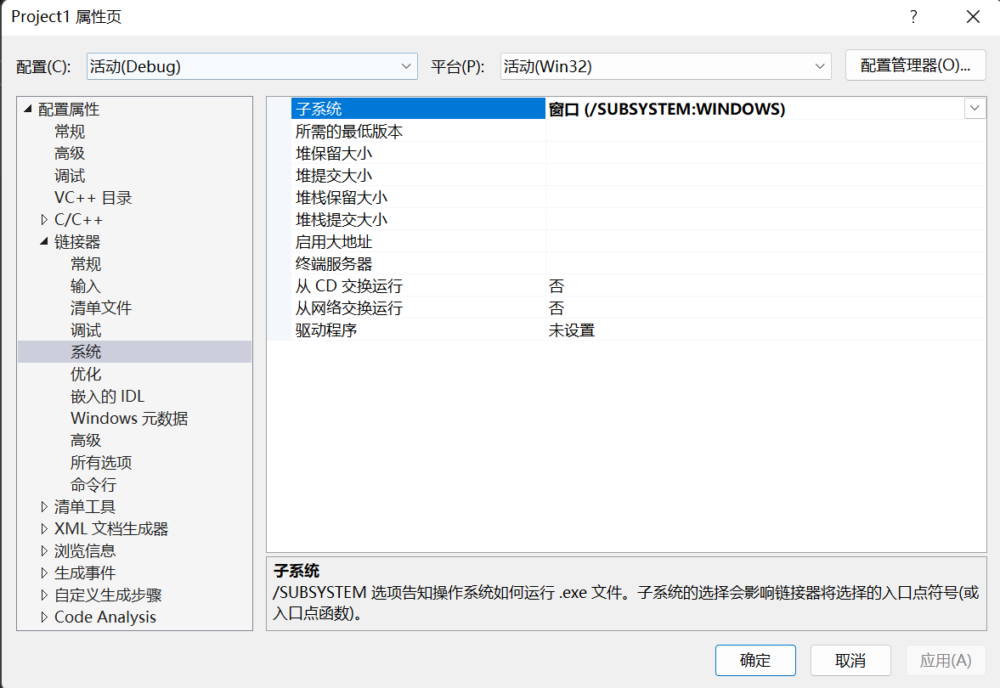
我们书写一个简单的C++程序！
#include<Windows.h>
int WINAPI WinMain(HINSTANCE hInstance, HINSTANCE hPrevInstance, LPSTR ipCmdLine, int nCmdShow)
{
MessageBox(NULL, TEXT("Hello, World"), TEXT("Captions"), MB_OKCANCEL | MB_ICONINFORMATION | MB_DEFBUTTON2);
return 0;
} F5一下：
6！
逐一解释
#include< Windows.h >
我们老规矩，先来看看Windows.h装了啥：
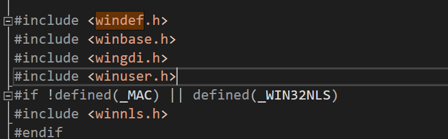
反正一大堆，但是核心就这些，这是我们需要注意的！
int WINAPI WinMain(HINSTANCE hInstance, HINSTANCE hPrevInstance, LPSTR ipCmdLine, int nCmdShow)
一个函数！有些人奇怪了，什么玩意？C++程序没有int main(), 就像西方没有耶路撒冷一样！不是的！
在Windows桌面开发下，他就是我们的main函数。在Microsoft API Platform SDK下，我们查阅到：
int WINAPI WinMain(
HINSTANCE hInstance,
// handle to current instance
HINSTANCE hPrevInstance,
// handle to previous instance
LPSTR lpCmdLine,
// command line
int nCmdShow
// show stat
)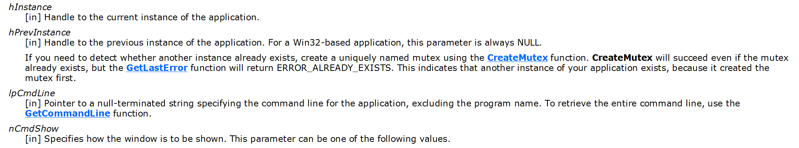
What is WINAPI
光标移动到上面： __stdcall 这是啥呢？标准调用！
被这个关键字修饰的函数，其参数都是从右向左通过堆栈传递的(__fastcall 的前面部分由ecx,edx传)， 函数调用在返回前要由被调用者清理堆栈。
啥？你不相信？反汇编我们产生的EXE文件就OK了：在MessageW处打一个断点，运行之找到

大多数电脑采用的是大端法，也就是说可以理解为：参数在右边的，先被推送进函数里去
批注？
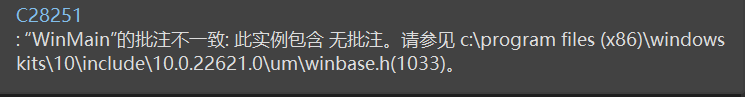
什么是批注呢请看我们函数和头文件下的：

看看_ In _这个宏，他就是一个说明参数性质的宏！
// from sal.h
_In_ : input parameter to a function, unmodified by called function
_Out_ : output parameter, written to by called function, pointed-to
location not expected to be initialized prior to call
_Outptr_ : like _Out_ when returned variable is a pointer type
(so param is pointer-to-pointer type). Called function
provides/allocated space.
_Outref_ : like _Outptr_, except param is reference-to-pointer type.
_Inout_ : inout parameter, read from and potentially modified by
called function.
_Ret_ : for return values
_Field_ : class/struct field invariants In 表明他是一个输入参数，有点像const 一样，函数读取值但是不可以修改它！
InOut就是表示这是一个这样的值：传入又传出，值会被修改
Out表示这个值会被这个函数设置
OutPtr 表示返回这个值的指针
Microsoft对参数合理性做出了更多的解释：类似于main函数一样
[in] hInstance
类型： HINSTANCE
应用程序的当前实例的句柄。
[in] hPrevInstance
类型： HINSTANCE
应用程序的上一个实例的句柄。 此参数始终为 NULL。 如果需要检测另一个实例是否已存在，请使用 CreateMutex 函数创建唯一命名的互斥体。 即使互斥体已存在，CreateMutex 也会成功，但函数将返回ERROR_ALREADY_EXISTS。 这表示应用程序的另一个实例存在，因为它首先创建了互斥体。 但是，恶意用户可以在执行之前创建此互斥体，并阻止应用程序启动。 为防止这种情况，请创建一个随机命名的互斥体并存储名称，以便它只能由授权用户获取。 或者，可以使用文件进行此目的。 若要将应用程序限制为每个用户的一个实例，请在用户配置文件目录中创建锁定的文件。
[in] lpCmdLine
类型： LPSTR
应用程序的命令行，不包括程序名称。 若要检索整个命令行，请使用 GetCommandLine 函数。
[in] nShowCmd
类型： int
控制窗口的显示方式。 此参数可以是可在 ShowWindow 函数的 nCmdShow 参数中指定的任何值。显示一个模式对话框，其中包含系统图标、一组按钮和一条简短的应用程序特定消息，例如状态或错误信息。 消息框返回一个整数值，该值指示用户单击的按钮。
MessageBox函数
语法
int MessageBox(
[in, optional] HWND hWnd,
[in, optional] LPCTSTR lpText,
[in, optional] LPCTSTR lpCaption,
[in] UINT uType
);参数
[in, optional] hWnd类型：HWND
要创建的消息框的所有者窗口的句柄。 如果此参数为 NULL，则消息框没有所有者窗口。
[in, optional] lpText类型： LPCTSTR
要显示的消息。 如果字符串包含多个行，则可以使用回车符和/或换行符分隔每行之间的行。
[in, optional] lpCaption类型： LPCTSTR
对话框标题。 如果此参数为 NULL，则默认标题为 Error。
[in] uType类型： UINT
对话框的内容和行为。 此参数可以是以下标志组中的标志的组合。
若要指示消息框中显示的按钮，请指定以下值之一。
| Value | 含义 |
|---|---|
| MB_ABORTRETRYIGNORE0x00000002L | 消息框包含三个推送按钮： 中止、 重试和 忽略。 |
| MB_CANCELTRYCONTINUE0x00000006L | 消息框包含三个按下按钮： “取消”、“ 重试”、“ 继续”。 使用此消息框类型，而不是MB_ABORTRETRYIGNORE。 |
| MB_HELP0x00004000L | 向消息框添加 “帮助 ”按钮。 当用户单击 “帮助 ”按钮或按 F1 时，系统会向所有者发送 WM_HELP 消息。 |
| MB_OK0x00000000L | 消息框包含一个按钮： 确定。 这是默认值。 |
| MB_OKCANCEL0x00000001L | 消息框包含两个推送按钮： “确定 ”和 “取消”。 |
| MB_RETRYCANCEL0x00000005L | 消息框包含两个按下按钮： 重试 和 取消。 |
| MB_YESNO0x00000004L | 消息框包含两个按下按钮： 是 和 否。 |
| MB_YESNOCANCEL0x00000003L | 消息框包含三个按钮： 是、 否和 取消。 |
若要在消息框中显示图标，请指定以下值之一。
| Value | 含义 |
|---|---|
| MB_ICONEXCLAMATION0x00000030L | 消息框中会显示一个感叹号图标。 |
| MB_ICONWARNING0x00000030L | 消息框中会显示一个感叹号图标。 |
| MB_ICONINFORMATION0x00000040L | 图标由圆圈中的小写字母 i 组成，显示在消息框中。 |
| MB_ICONASTERISK0x00000040L | 图标由圆圈中的小写字母 i 组成，显示在消息框中。 |
| MB_ICONQUESTION0x00000020L | 消息框中会显示一个问号图标。 不再建议使用问号消息图标，因为这种图标无法清楚地表示特定类型的消息，并且作为问题的消息表述可应用于任何消息类型。 此外，用户可能会将问号消息符号与帮助信息混淆。 因此，不要在消息框中使用问号消息符号。 系统继续支持它包含的内容，只为满足反向兼容性。 |
| MB_ICONSTOP0x00000010L | 消息框中会显示一个停止符号图标。 |
| MB_ICONERROR0x00000010L | 消息框中会显示一个停止符号图标。 |
| MB_ICONHAND0x00000010L | 消息框中会显示一个停止符号图标。 |
若要指示默认按钮，请指定以下值之一。
| Value | 含义 |
|---|---|
| MB_DEFBUTTON10x00000000L | 第一个按钮是默认按钮。除非指定了MB_DEFBUTTON2、MB_DEFBUTTON3或MB_DEFBUTTON4，否则MB_DEFBUTTON1是默认值。 |
| MB_DEFBUTTON20x00000100L | 第二个按钮是默认按钮。 |
| MB_DEFBUTTON30x00000200L | 第三个按钮是默认按钮。 |
| MB_DEFBUTTON40x00000300L | 第四个按钮是默认按钮。 |
若要指示对话框的形式，请指定以下值之一。
| Value | 含义 |
|---|---|
| MB_APPLMODAL0x00000000L | 在 hWnd 参数标识的窗口中继续工作之前，用户必须响应消息框。 但是，用户可以移动到其他线程的窗口，并在这些窗口中工作。根据应用程序中的窗口层次结构，用户可能能够移动到线程中的其他窗口。 消息框父级的所有子窗口都将自动禁用，但弹出窗口不是。如果未指定MB_SYSTEMMODAL或MB_TASKMODAL，则MB_APPLMODAL为默认值。 |
| MB_SYSTEMMODAL0x00001000L | 与MB_APPLMODAL相同，消息框具有 WS_EX_TOPMOST 样式。 使用系统模式消息框通知用户严重、潜在的破坏性错误，例如， (立即引起注意，) 内存不足。 此标志不会影响用户与 与 hWnd 关联的窗口以外的窗口交互的能力。 |
| MB_TASKMODAL0x00002000L | 与 MB_APPLMODAL 相同，如果 hWnd 参数为 NULL，则禁用属于当前线程的所有顶级窗口。 当调用应用程序或库没有可用的窗口句柄时，请使用此标志，但仍需要防止输入到调用线程中的其他窗口，而不会挂起其他线程。 |
若要指定其他选项，请使用以下一个或多个值。
| Value | 含义 |
|---|---|
| MB_DEFAULT_DESKTOP_ONLY0x00020000L | 与交互式窗口工作站的桌面相同。 有关详细信息，请参阅 窗口工作站。如果当前输入桌面不是默认桌面，则在用户切换到默认桌面之前， MessageBox 不会返回。 |
| MB_RIGHT0x00080000L | 文本是右对齐的。 |
| MB_RTLREADING0x00100000L | 在希伯来语和阿拉伯语系统上使用从右到左阅读顺序显示消息和标题文本。 |
| MB_SETFOREGROUND0x00010000L | 消息框将成为前台窗口。 在内部，系统调用消息框的 SetForegroundWindow 函数。 |
| MB_TOPMOST0x00040000L | 消息框是使用 WS_EX_TOPMOST 窗口样式创建的。 |
| MB_SERVICE_NOTIFICATION0x00200000L | 调用方是通知用户某个事件的服务。 该函数在当前活动桌面上显示一个消息框，即使没有用户登录到计算机也是如此。终端服务： 如果调用线程具有模拟令牌，该函数会将消息框定向到模拟令牌中指定的会话。如果设置了此标志， 则 hWnd 参数必须为 NULL。 这样，消息框可以出现在桌面上，而不是与 hWnd 对应的桌面。有关使用此标志的安全注意事项的信息，请参阅 Interactive Services。 具体而言，请注意，此标志可以在锁定的桌面上生成交互式内容，因此应仅用于一组非常有限的方案，例如资源耗尽。 |
返回值
类型： int
如果消息框有 “取消 ”按钮，则函数返回 IDCANCEL 值（如果按下 ESC 键或选中 “取消 ”按钮）。 如果消息框没有 “取消 ”按钮，则按 ESC 将不起作用 -除非存在MB_OK按钮。 如果显示MB_OK按钮，并且用户按 ESC，则返回值为 IDOK。
如果函数失败，则返回值为零。 要获得更多的错误信息，请调用 GetLastError。
如果函数成功，则返回值为以下菜单项值之一。
| 返回代码/值 | 说明 |
|---|---|
| IDABORT3 | 已选择 “中止 ”按钮。 |
| IDCANCEL2 | 已选择“ 取消 ”按钮。 |
| IDCONTINUE11 | 已选择 “继续 ”按钮。 |
| IDIGNORE5 | 已选择 “忽略 ”按钮。 |
| IDNO7 | 已选择 “无 ”按钮。 |
| IDOK1 | 已选择 “确定 ”按钮。 |
| IDRETRY4 | 已选择 “重试 ”按钮。 |
| IDTRYAGAIN10 | 已选择 “重试 ”按钮。 |
| IDYES6 | 已选择 “是 ”按钮。 |
注解
通过将 uType 参数设置为相应的标志值，可以在消息框中使用以下系统图标。
| 图标 | 标志值 |
|---|---|
| MB_ICONHAND、 MB_ICONSTOP或 MB_ICONERROR | |
| MB_ICONQUESTION | |
 |
MB_ICONEXCLAMATION 或 MB_ICONWARNING |
| MB_ICONASTERISK 或 MB_ICONINFORMATION |
在 MessageBox 显示字符串开头的 Unicode 格式字符 U+200F 表示 (RL) M 添加两个从右到左标记，以便使 MessageBox 的读取顺序呈现为从右到左 (RTL) 。
使用系统模式消息框指示系统内存不足时， lpText 和 lpCaption 参数指向的字符串不应从资源文件中获取，因为尝试加载资源可能会失败。
如果在对话框存在时创建消息框，请使用对话框的句柄作为 hWnd 参数。 hWnd 参数不应标识子窗口，如对话框中的控件。
示例
在以下示例中，应用程序显示一个消息框，该消息框在出现错误条件后提示用户执行操作。 消息框显示描述错误条件以及如何解决错误条件的消息。 MB_CANCELTRYCONTINUE样式指示 MessageBox 提供三个按钮，用户可以选择如何继续操作。 MB_DEFBUTTON2样式将默认焦点设置为消息框的第二个按钮，在本例中为“重试”按钮。
#include<Windows.h>
void WINAPI doSomethingHalt() {
int usrChoice = MessageBox(NULL, TEXT("Are you sure to move forward? That is supposed to be invalid... I convinced!")\
,TEXT("Warning"),MB_ICONWARNING|MB_CANCELTRYCONTINUE|MB_DEFBUTTON2);
switch (usrChoice)
{
case IDCANCEL:
MessageBox(NULL, TEXT("good"), TEXT("afterWard"), MB_OKCANCEL | MB_ICONINFORMATION | MB_DEFBUTTON2);
break;
case IDRETRY:
MessageBox(NULL, TEXT("I mean: that is not good!"), TEXT("afterWard"), MB_OKCANCEL | MB_ICONINFORMATION | MB_DEFBUTTON2);
break;
case IDCONTINUE:
MessageBox(NULL, TEXT("I mean: that is not good!"), TEXT("afterWard"), MB_OKCANCEL | MB_ICONINFORMATION | MB_DEFBUTTON2);
break;
default:
break;
}
return;
}
int WINAPI WinMain(HINSTANCE hInstance, HINSTANCE hPrevInstance, LPSTR ipCmdLine, int nCmdShow)
{
//MessageBox(NULL, TEXT("Hello, World"), TEXT("Captions"), MB_OKCANCEL | MB_ICONINFORMATION | MB_DEFBUTTON2);
doSomethingHalt();
return 0;
}
// design by CharlieChen字符串主题
入门
下面我们开始入门简单的字符串主题：啥意思呢？回顾我们C语言的API。我们是如下声明一个char类型或基于char类型的数组
char typicalChar = 'A';
char* TCPtr = "Hello!My friend~";
char arrayCPtr = "hello,my frined~"; 我们马上可以看到，char是一份字节大小，那么下面的arrayCPtr就指明需要17个字节来存储。
wchar_t类型
可是，仅仅使用char可能存储不下如今丰富的字符。所以，转向扩展char是必要的，wchar,也就是widechar应运而生。在Windows 2000之后所有的Windows系统都在底层上支持Unicode字符集。
我们这样声明与初始化一个wchar变量：
wchar_t wideChar = L'A'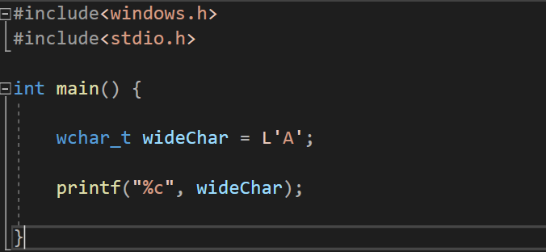
类似的：
wchar* ptrW = "Hello";
wchar ptr[7] = "Hello!"; 但是注意：如果我们还是选择
printf("%s", ptrW);
printf("%s", ptr); 则只会打印首元素，这是因为字符串类型不匹配，人话讲就是：wchar字符串不用%s打印，而是ls
printf("%ls", ptrW);
printf("%ls", ptr); 或者是
wchar_t* WPTR = {'a','\0'};
wprintf("%s",WPTR); 或是直接调用setlocal函数做默认的设置！
#include <stdio.h>
#include <string.h>
#include <locale.h>
int main()
{
//使用系统默认的设置调用setlocale(LC_ALL, "");
setlocale(LC_ALL, "");
const wchar_t * chWord = L"疯狂程序人—码农哈哥";
printf("%s",chWord);
}Windows下的字符和宽字符
Windows整理自己的活：他们定义了他们自己的字符类型：在winnt.h文件下可以找到：
//
// Basics
//
#ifndef VOID
#define VOID void
typedef char CHAR;
typedef short SHORT;
typedef long LONG;
#if !defined(MIDL_PASS)
typedef int INT;
#endif
#endif
//
// UNICODE (Wide Character) types
//
#ifndef _MAC
typedef wchar_t WCHAR; // wc, 16-bit UNICODE character
#else
// some Macintosh compilers don't define wchar_t in a convenient location, or define it as a char
typedef unsigned short WCHAR; // wc, 16-bit UNICODE character
#endif
typedef WCHAR *PWCHAR, *LPWCH, *PWCH;
typedef CONST WCHAR *LPCWCH, *PCWCH;
typedef _Null_terminated_ WCHAR *NWPSTR, *LPWSTR, *PWSTR;
typedef _Null_terminated_ PWSTR *PZPWSTR;
typedef _Null_terminated_ CONST PWSTR *PCZPWSTR;
typedef _Null_terminated_ WCHAR UNALIGNED *LPUWSTR, *PUWSTR;
typedef _Null_terminated_ CONST WCHAR *LPCWSTR, *PCWSTR;
typedef _Null_terminated_ PCWSTR *PZPCWSTR;
typedef _Null_terminated_ CONST PCWSTR *PCZPCWSTR;
typedef _Null_terminated_ CONST WCHAR UNALIGNED *LPCUWSTR, *PCUWSTR;
typedef _NullNull_terminated_ WCHAR *PZZWSTR;
typedef _NullNull_terminated_ CONST WCHAR *PCZZWSTR;
typedef _NullNull_terminated_ WCHAR UNALIGNED *PUZZWSTR;
typedef _NullNull_terminated_ CONST WCHAR UNALIGNED *PCUZZWSTR;
typedef WCHAR *PNZWCH;
typedef CONST WCHAR *PCNZWCH;
typedef WCHAR UNALIGNED *PUNZWCH;
typedef CONST WCHAR UNALIGNED *PCUNZWCH;
#if _WIN32_WINNT >= 0x0600 || (defined(__cplusplus) && defined(WINDOWS_ENABLE_CPLUSPLUS))
typedef CONST WCHAR *LPCWCHAR, *PCWCHAR;
typedef CONST WCHAR UNALIGNED *LPCUWCHAR, *PCUWCHAR;
//
// UCS (Universal Character Set) types
//
typedef unsigned long UCSCHAR;
//
// Even pre-Unicode agreement, UCS values are always in the
// range U+00000000 to U+7FFFFFFF, so we'll pick an obvious
// value.
#define UCSCHAR_INVALID_CHARACTER (0xffffffff)
#define MIN_UCSCHAR (0)
//
// We'll assume here that the ISO-10646 / Unicode agreement
// not to assign code points after U+0010FFFF holds so that
// we do not have to have separate "UCSCHAR" and "UNICODECHAR"
// types.
//
#define MAX_UCSCHAR (0x0010FFFF)
typedef UCSCHAR *PUCSCHAR;
typedef const UCSCHAR *PCUCSCHAR;
typedef UCSCHAR *PUCSSTR;
typedef UCSCHAR UNALIGNED *PUUCSSTR;
typedef const UCSCHAR *PCUCSSTR;
typedef const UCSCHAR UNALIGNED *PCUUCSSTR;
typedef UCSCHAR UNALIGNED *PUUCSCHAR;
typedef const UCSCHAR UNALIGNED *PCUUCSCHAR;
#endif // _WIN32_WINNT >= 0x0600
//
// ANSI (Multi-byte Character) types
//
typedef CHAR *PCHAR, *LPCH, *PCH;
typedef CONST CHAR *LPCCH, *PCCH;
typedef _Null_terminated_ CHAR *NPSTR, *LPSTR, *PSTR;
typedef _Null_terminated_ PSTR *PZPSTR;
typedef _Null_terminated_ CONST PSTR *PCZPSTR;
typedef _Null_terminated_ CONST CHAR *LPCSTR, *PCSTR;
typedef _Null_terminated_ PCSTR *PZPCSTR;
typedef _Null_terminated_ CONST PCSTR *PCZPCSTR;
typedef _NullNull_terminated_ CHAR *PZZSTR;
typedef _NullNull_terminated_ CONST CHAR *PCZZSTR;
typedef CHAR *PNZCH;
typedef CONST CHAR *PCNZCH;
//
// Neutral ANSI/UNICODE types and macros
//
#ifdef UNICODE // r_winnt
#ifndef _TCHAR_DEFINED
typedef WCHAR TCHAR, *PTCHAR;
typedef WCHAR TBYTE , *PTBYTE ;
#define _TCHAR_DEFINED
#endif /* !_TCHAR_DEFINED */
typedef LPWCH LPTCH, PTCH;
typedef LPCWCH LPCTCH, PCTCH;
typedef LPWSTR PTSTR, LPTSTR;
typedef LPCWSTR PCTSTR, LPCTSTR;
typedef LPUWSTR PUTSTR, LPUTSTR;
typedef LPCUWSTR PCUTSTR, LPCUTSTR;
typedef LPWSTR LP;
typedef PZZWSTR PZZTSTR;
typedef PCZZWSTR PCZZTSTR;
typedef PUZZWSTR PUZZTSTR;
typedef PCUZZWSTR PCUZZTSTR;
typedef PZPWSTR PZPTSTR;
typedef PNZWCH PNZTCH;
typedef PCNZWCH PCNZTCH;
typedef PUNZWCH PUNZTCH;
typedef PCUNZWCH PCUNZTCH;
#define __TEXT(quote) L##quote // r_winnt
#else /* UNICODE */ // r_winnt
#ifndef _TCHAR_DEFINED
typedef char TCHAR, *PTCHAR;
typedef unsigned char TBYTE , *PTBYTE ;
#define _TCHAR_DEFINED
#endif /* !_TCHAR_DEFINED */
typedef LPCH LPTCH, PTCH;
typedef LPCCH LPCTCH, PCTCH;
typedef LPSTR PTSTR, LPTSTR, PUTSTR, LPUTSTR;
typedef LPCSTR PCTSTR, LPCTSTR, PCUTSTR, LPCUTSTR;
typedef PZZSTR PZZTSTR, PUZZTSTR;
typedef PCZZSTR PCZZTSTR, PCUZZTSTR;
typedef PZPSTR PZPTSTR;
typedef PNZCH PNZTCH, PUNZTCH;
typedef PCNZCH PCNZTCH, PCUNZTCH;
#define __TEXT(quote) quote // r_winnt
#endif /* UNICODE */ // r_winnt
#define TEXT(quote) __TEXT(quote) // r_winnt
typedef SHORT *PSHORT;
typedef LONG *PLONG;
#define ALL_PROCESSOR_GROUPS 0xffff 在这里我们找到了两个东西：
#ifndef _MAC
typedef wchar_t WCHAR; // wc, 16-bit UNICODE character
#else
// some Macintosh compilers don't define wchar_t in a convenient location, or define it as a char
typedef unsigned short WCHAR; // wc, 16-bit UNICODE character
#endif 首先是wchar_t被重写位WCHAR。对于一些甚至没有wchar的编译器直接对unsigned short起别名。
其次是TEXT宏，这个宏便捷的帮助我们直接将普通的字符串升级为宽字符串，其做法不是强制转换，而是：
#define __TEXT(quote) L##quote
#define TEXT(quote) __TEXT(quote) ##是令牌粘贴，就是直接把L和字符串连接在一起返回，比若说：
TEXT("Hello")--- Compiler----> L"Hello" 我们看到，上面的定义给出了：PSTR和LPSTR的小东西。他们都是CHAR（本质上就是Char），而P C STR 和 LP C STR则是Const类型的字符串。也就是常字符串！
那对于TCHAR这样Windows自己给出了字符串，我们应该怎么处理呢了，答案是万能的WIndows又帮我们干好了。使用P T STR和LP T STR就可以胜任这些工作！
常见的字符串处理工作
获取字符串的长度
下面我们要说的是如何获取字符串的长度，请看strlen和wstrlen.
size_t strlen(const char* str);
size_t wstrlen(const wchar_t* str); size_t，如其所说的那样，衡量的是大小的类型。其定义查看建议自行搜索，这里做阐述。因为不是重点我想说的！
来试试看：
#include<Windows.h>
#include<stdio.h>
#include<tchar.h>
int main() {
CHAR str[] = "C语言\0"; // 这个函数返回占比字节的大小
WCHAR wstr[] = L"C语言"; // 这个函数返回的是宽字符的个数
_tprintf(TEXT("strlen(str) = %d\n wcslen(wstr) = %d"), strlen(str), wcslen(wstr));
} 
注意到_tprintf是一个随系统环境而改变的宏函数，在支持UNICODE字符集的情况下，系统将会自动的转化之成为wprintf！
类似的：我们还有一个叫做tcslen这个函数，他是这样被定义的：
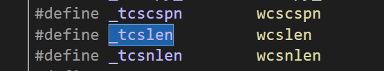
好鸡肋啊，那如果我们改一下不支持Unicode子集呢？仍然是右键项目——属性，转到这个地方：

改成
发现变灰了！转向再看发现跳转到了：>

字符串主题
入门
下面我们开始入门简单的字符串主题：啥意思呢？回顾我们C语言的API。我们是如下声明一个char类型或基于char类型的数组
char typicalChar = 'A';
char* TCPtr = "Hello!My friend~";
char arrayCPtr = "hello,my frined~"; 我们马上可以看到，char是一份字节大小，那么下面的arrayCPtr就指明需要17个字节来存储。
wchar_t类型
可是，仅仅使用char可能存储不下如今丰富的字符。所以，转向扩展char是必要的，wchar,也就是widechar应运而生。在Windows 2000之后所有的Windows系统都在底层上支持Unicode字符集。
我们这样声明与初始化一个wchar变量：
wchar_t wideChar = L'A' 类似的：
wchar* ptrW = "Hello";
wchar ptr[7] = "Hello!"; 但是注意：如果我们还是选择
printf("%s", ptrW);
printf("%s", ptr); 则只会打印首元素，这是因为字符串类型不匹配，人话讲就是：wchar字符串不用%s打印，而是ls
printf("%ls", ptrW);
printf("%ls", ptr); 或者是
wchar_t* WPTR = {'a','\0'};
wprintf("%s",WPTR); 或是直接调用setlocal函数做默认的设置！
#include <stdio.h>
#include <string.h>
#include <locale.h>
int main()
{
//使用系统默认的设置调用setlocale(LC_ALL, "");
setlocale(LC_ALL, "");
const wchar_t * chWord = L"疯狂程序人—码农哈哥";
printf("%s",chWord);
}Windows下的字符和宽字符
Windows整理自己的活：他们定义了他们自己的字符类型：在winnt.h文件下可以找到：
//
// Basics
//
#ifndef VOID
#define VOID void
typedef char CHAR;
typedef short SHORT;
typedef long LONG;
#if !defined(MIDL_PASS)
typedef int INT;
#endif
#endif
//
// UNICODE (Wide Character) types
//
#ifndef _MAC
typedef wchar_t WCHAR; // wc, 16-bit UNICODE character
#else
// some Macintosh compilers don't define wchar_t in a convenient location, or define it as a char
typedef unsigned short WCHAR; // wc, 16-bit UNICODE character
#endif
typedef WCHAR *PWCHAR, *LPWCH, *PWCH;
typedef CONST WCHAR *LPCWCH, *PCWCH;
typedef _Null_terminated_ WCHAR *NWPSTR, *LPWSTR, *PWSTR;
typedef _Null_terminated_ PWSTR *PZPWSTR;
typedef _Null_terminated_ CONST PWSTR *PCZPWSTR;
typedef _Null_terminated_ WCHAR UNALIGNED *LPUWSTR, *PUWSTR;
typedef _Null_terminated_ CONST WCHAR *LPCWSTR, *PCWSTR;
typedef _Null_terminated_ PCWSTR *PZPCWSTR;
typedef _Null_terminated_ CONST PCWSTR *PCZPCWSTR;
typedef _Null_terminated_ CONST WCHAR UNALIGNED *LPCUWSTR, *PCUWSTR;
typedef _NullNull_terminated_ WCHAR *PZZWSTR;
typedef _NullNull_terminated_ CONST WCHAR *PCZZWSTR;
typedef _NullNull_terminated_ WCHAR UNALIGNED *PUZZWSTR;
typedef _NullNull_terminated_ CONST WCHAR UNALIGNED *PCUZZWSTR;
typedef WCHAR *PNZWCH;
typedef CONST WCHAR *PCNZWCH;
typedef WCHAR UNALIGNED *PUNZWCH;
typedef CONST WCHAR UNALIGNED *PCUNZWCH;
#if _WIN32_WINNT >= 0x0600 || (defined(__cplusplus) && defined(WINDOWS_ENABLE_CPLUSPLUS))
typedef CONST WCHAR *LPCWCHAR, *PCWCHAR;
typedef CONST WCHAR UNALIGNED *LPCUWCHAR, *PCUWCHAR;
//
// UCS (Universal Character Set) types
//
typedef unsigned long UCSCHAR;
//
// Even pre-Unicode agreement, UCS values are always in the
// range U+00000000 to U+7FFFFFFF, so we'll pick an obvious
// value.
#define UCSCHAR_INVALID_CHARACTER (0xffffffff)
#define MIN_UCSCHAR (0)
//
// We'll assume here that the ISO-10646 / Unicode agreement
// not to assign code points after U+0010FFFF holds so that
// we do not have to have separate "UCSCHAR" and "UNICODECHAR"
// types.
//
#define MAX_UCSCHAR (0x0010FFFF)
typedef UCSCHAR *PUCSCHAR;
typedef const UCSCHAR *PCUCSCHAR;
typedef UCSCHAR *PUCSSTR;
typedef UCSCHAR UNALIGNED *PUUCSSTR;
typedef const UCSCHAR *PCUCSSTR;
typedef const UCSCHAR UNALIGNED *PCUUCSSTR;
typedef UCSCHAR UNALIGNED *PUUCSCHAR;
typedef const UCSCHAR UNALIGNED *PCUUCSCHAR;
#endif // _WIN32_WINNT >= 0x0600
//
// ANSI (Multi-byte Character) types
//
typedef CHAR *PCHAR, *LPCH, *PCH;
typedef CONST CHAR *LPCCH, *PCCH;
typedef _Null_terminated_ CHAR *NPSTR, *LPSTR, *PSTR;
typedef _Null_terminated_ PSTR *PZPSTR;
typedef _Null_terminated_ CONST PSTR *PCZPSTR;
typedef _Null_terminated_ CONST CHAR *LPCSTR, *PCSTR;
typedef _Null_terminated_ PCSTR *PZPCSTR;
typedef _Null_terminated_ CONST PCSTR *PCZPCSTR;
typedef _NullNull_terminated_ CHAR *PZZSTR;
typedef _NullNull_terminated_ CONST CHAR *PCZZSTR;
typedef CHAR *PNZCH;
typedef CONST CHAR *PCNZCH;
//
// Neutral ANSI/UNICODE types and macros
//
#ifdef UNICODE // r_winnt
#ifndef _TCHAR_DEFINED
typedef WCHAR TCHAR, *PTCHAR;
typedef WCHAR TBYTE , *PTBYTE ;
#define _TCHAR_DEFINED
#endif /* !_TCHAR_DEFINED */
typedef LPWCH LPTCH, PTCH;
typedef LPCWCH LPCTCH, PCTCH;
typedef LPWSTR PTSTR, LPTSTR;
typedef LPCWSTR PCTSTR, LPCTSTR;
typedef LPUWSTR PUTSTR, LPUTSTR;
typedef LPCUWSTR PCUTSTR, LPCUTSTR;
typedef LPWSTR LP;
typedef PZZWSTR PZZTSTR;
typedef PCZZWSTR PCZZTSTR;
typedef PUZZWSTR PUZZTSTR;
typedef PCUZZWSTR PCUZZTSTR;
typedef PZPWSTR PZPTSTR;
typedef PNZWCH PNZTCH;
typedef PCNZWCH PCNZTCH;
typedef PUNZWCH PUNZTCH;
typedef PCUNZWCH PCUNZTCH;
#define __TEXT(quote) L##quote // r_winnt
#else /* UNICODE */ // r_winnt
#ifndef _TCHAR_DEFINED
typedef char TCHAR, *PTCHAR;
typedef unsigned char TBYTE , *PTBYTE ;
#define _TCHAR_DEFINED
#endif /* !_TCHAR_DEFINED */
typedef LPCH LPTCH, PTCH;
typedef LPCCH LPCTCH, PCTCH;
typedef LPSTR PTSTR, LPTSTR, PUTSTR, LPUTSTR;
typedef LPCSTR PCTSTR, LPCTSTR, PCUTSTR, LPCUTSTR;
typedef PZZSTR PZZTSTR, PUZZTSTR;
typedef PCZZSTR PCZZTSTR, PCUZZTSTR;
typedef PZPSTR PZPTSTR;
typedef PNZCH PNZTCH, PUNZTCH;
typedef PCNZCH PCNZTCH, PCUNZTCH;
#define __TEXT(quote) quote // r_winnt
#endif /* UNICODE */ // r_winnt
#define TEXT(quote) __TEXT(quote) // r_winnt
typedef SHORT *PSHORT;
typedef LONG *PLONG;
#define ALL_PROCESSOR_GROUPS 0xffff 在这里我们找到了两个东西：
#ifndef _MAC
typedef wchar_t WCHAR; // wc, 16-bit UNICODE character
#else
// some Macintosh compilers don't define wchar_t in a convenient location, or define it as a char
typedef unsigned short WCHAR; // wc, 16-bit UNICODE character
#endif 首先是wchar_t被重写位WCHAR。对于一些甚至没有wchar的编译器直接对unsigned short起别名。
其次是TEXT宏，这个宏便捷的帮助我们直接将普通的字符串升级为宽字符串，其做法不是强制转换，而是：
#define __TEXT(quote) L##quote
#define TEXT(quote) __TEXT(quote) ##是令牌粘贴，就是直接把L和字符串连接在一起返回，比若说：
TEXT("Hello")--- Compiler----> L"Hello" 我们看到，上面的定义给出了：PSTR和LPSTR的小东西。他们都是CHAR（本质上就是Char），而P C STR 和 LP C STR则是Const类型的字符串。也就是常字符串！
那对于TCHAR这样Windows自己给出了字符串，我们应该怎么处理呢了，答案是万能的WIndows又帮我们干好了。使用P T STR和LP T STR就可以胜任这些工作！
常见的字符串处理工作
获取字符串的长度
下面我们要说的是如何获取字符串的长度，请看strlen和wstrlen.
size_t strlen(const char* str);
size_t wstrlen(const wchar_t* str); size_t，如其所说的那样，衡量的是大小的类型。其定义查看建议自行搜索，这里做阐述。因为不是重点我想说的！
来试试看：
#include<Windows.h>
#include<stdio.h>
#include<tchar.h>
int main() {
CHAR str[] = "C语言\0"; // 这个函数返回占比字节的大小
WCHAR wstr[] = L"C语言"; // 这个函数返回的是宽字符的个数
_tprintf(TEXT("strlen(str) = %d\n wcslen(wstr) = %d"), strlen(str), wcslen(wstr));
}
注意到_tprintf是一个随系统环境而改变的宏函数，在支持UNICODE字符集的情况下，系统将会自动的转化之成为wprintf！
类似的：我们还有一个叫做tcslen这个函数，他是这样被定义的：
好鸡肋啊，那如果我们改一下不支持Unicode子集呢？仍然是右键项目——属性，转到这个地方：
改成
发现变灰了！转向再看发现跳转到了：>
数据类型一看
原生C数据类型
int float double ... Windows自己的：
BOOL BYTE CHAR CONST DWORD DOWRD32 DWORD64 FLOAT HANDLE HICON HINSTANCE
HKEY HMODULE HWND INT INT_PTR INT32 INT64 看看这个：
LPSTR szString = L"this is a long pointer to string."; 跳转得到：
//
// ANSI (Multi-byte Character) types
//
typedef CHAR *PCHAR, *LPCH, *PCH;
typedef CONST CHAR *LPCCH, *PCCH;
typedef _Null_terminated_ CHAR *NPSTR, *LPSTR, *PSTR; 进一步针对CHAR类型跳转
typedef char CHAR; 微软搞那么多宏，一方面是历史遗留，另一方面是方便他们的工程师更容易区分
Dword是这个东西：一个四个字节的数据类型
DWORD dwMax = 0xFFFFFFFFtypedef unsigned long DWORD; 于是INT就是有符号的，DWORD是无符号的。
#include<stdio.h>
#include<Windows.h>
int main()
{
LPSTR szString = L"this is a long pointer to string.";
INT a = 10;
DWORD dwMax = 0xFFFFFFFF;
MessageBox(NULL, szString, TEXT("LPSTR"), MB_OK);
} 在C中我们有：memcpy
在Windows下，有一个函数叫CopyMemory()
CopyMemory(IpStr, szString, lstrlen(szString) + 1); // add one to include the \0.#define CopyMemory RtlCopyMemory#define RtlCopyMemory(Destination,Source,Length) memcpy((Destination),(Source),(Length)) Handle,也就是句柄，是这样被定义的：
他有如下的句柄：
typedef void *HANDLE; HICON图标
DECLARE_HANDLE(HICON);
#define DECLARE_HANDLE(name) struct name##__{int unused;}; typedef struct name##__ *name HInstance实例句柄
DECLARE_HANDLE(HINSTANCE); HKey注册表的句柄
DECLARE_HANDLE(HKEY); Hmodule模块句柄
typedef HINSTANCE HMODULE; /* HMODULEs can be used in place of HINSTANCEs */ HWND窗口句柄
DECLARE_HANDLE (HWND);API基础函数
WindowAPI大量的使用了Windows的数据类型！所有的API都有W版和A版，分别表示的是支持Unicode字符集和ASCII多字节字符集。下面我们来看一个Windows自己创建的demo，选择Win32项目创建。看到主文件下：
// WindowsProject1.cpp : 定义应用程序的入口点。
//
#include "framework.h"
#include "WindowsProject1.h"
#define MAX_LOADSTRING 100
// 全局变量:
HINSTANCE hInst; // 当前实例
WCHAR szTitle[MAX_LOADSTRING]; // 标题栏文本
WCHAR szWindowClass[MAX_LOADSTRING]; // 主窗口类名
// 此代码模块中包含的函数的前向声明:
ATOM MyRegisterClass(HINSTANCE hInstance);
BOOL InitInstance(HINSTANCE, int);
LRESULT CALLBACK WndProc(HWND, UINT, WPARAM, LPARAM);
INT_PTR CALLBACK About(HWND, UINT, WPARAM, LPARAM);
int APIENTRY wWinMain(_In_ HINSTANCE hInstance,
_In_opt_ HINSTANCE hPrevInstance,
_In_ LPWSTR lpCmdLine,
_In_ int nCmdShow)
{
UNREFERENCED_PARAMETER(hPrevInstance);
UNREFERENCED_PARAMETER(lpCmdLine);
// TODO: 在此处放置代码。
// 初始化全局字符串
LoadStringW(hInstance, IDS_APP_TITLE, szTitle, MAX_LOADSTRING);
LoadStringW(hInstance, IDC_WINDOWSPROJECT1, szWindowClass, MAX_LOADSTRING);
MyRegisterClass(hInstance);
// 执行应用程序初始化:
if (!InitInstance (hInstance, nCmdShow))
{
return FALSE;
}
HACCEL hAccelTable = LoadAccelerators(hInstance, MAKEINTRESOURCE(IDC_WINDOWSPROJECT1));
MSG msg;
// 主消息循环:
while (GetMessage(&msg, nullptr, 0, 0))
{
if (!TranslateAccelerator(msg.hwnd, hAccelTable, &msg))
{
TranslateMessage(&msg);
DispatchMessage(&msg);
}
}
return (int) msg.wParam;
}
//
// 函数: MyRegisterClass()
//
// 目标: 注册窗口类。
//
ATOM MyRegisterClass(HINSTANCE hInstance)
{
WNDCLASSEXW wcex;
wcex.cbSize = sizeof(WNDCLASSEX);
wcex.style = CS_HREDRAW | CS_VREDRAW;
wcex.lpfnWndProc = WndProc;
wcex.cbClsExtra = 0;
wcex.cbWndExtra = 0;
wcex.hInstance = hInstance;
wcex.hIcon = LoadIcon(hInstance, MAKEINTRESOURCE(IDI_WINDOWSPROJECT1));
wcex.hCursor = LoadCursor(nullptr, IDC_ARROW);
wcex.hbrBackground = (HBRUSH)(COLOR_WINDOW+1);
wcex.lpszMenuName = MAKEINTRESOURCEW(IDC_WINDOWSPROJECT1);
wcex.lpszClassName = szWindowClass;
wcex.hIconSm = LoadIcon(wcex.hInstance, MAKEINTRESOURCE(IDI_SMALL));
return RegisterClassExW(&wcex);
}
//
// 函数: InitInstance(HINSTANCE, int)
//
// 目标: 保存实例句柄并创建主窗口
//
// 注释:
//
// 在此函数中，我们在全局变量中保存实例句柄并
// 创建和显示主程序窗口。
//
BOOL InitInstance(HINSTANCE hInstance, int nCmdShow)
{
hInst = hInstance; // 将实例句柄存储在全局变量中
HWND hWnd = CreateWindowW(szWindowClass, szTitle, WS_OVERLAPPEDWINDOW,
CW_USEDEFAULT, 0, CW_USEDEFAULT, 0, nullptr, nullptr, hInstance, nullptr);
if (!hWnd)
{
return FALSE;
}
ShowWindow(hWnd, nCmdShow);
UpdateWindow(hWnd);
return TRUE;
}
//
// 函数: WndProc(HWND, UINT, WPARAM, LPARAM)
//
// 目标: 处理主窗口的消息。
//
// WM_COMMAND - 处理应用程序菜单
// WM_PAINT - 绘制主窗口
// WM_DESTROY - 发送退出消息并返回
//
//
LRESULT CALLBACK WndProc(HWND hWnd, UINT message, WPARAM wParam, LPARAM lParam)
{
switch (message)
{
case WM_COMMAND:
{
int wmId = LOWORD(wParam);
// 分析菜单选择:
switch (wmId)
{
case IDM_ABOUT:
DialogBox(hInst, MAKEINTRESOURCE(IDD_ABOUTBOX), hWnd, About);
break;
case IDM_EXIT:
DestroyWindow(hWnd);
break;
default:
return DefWindowProc(hWnd, message, wParam, lParam);
}
}
break;
case WM_PAINT:
{
PAINTSTRUCT ps;
HDC hdc = BeginPaint(hWnd, &ps);
// TODO: 在此处添加使用 hdc 的任何绘图代码...
EndPaint(hWnd, &ps);
}
break;
case WM_DESTROY:
PostQuitMessage(0);
break;
default:
return DefWindowProc(hWnd, message, wParam, lParam);
}
return 0;
}
// “关于”框的消息处理程序。
INT_PTR CALLBACK About(HWND hDlg, UINT message, WPARAM wParam, LPARAM lParam)
{
UNREFERENCED_PARAMETER(lParam);
switch (message)
{
case WM_INITDIALOG:
return (INT_PTR)TRUE;
case WM_COMMAND:
if (LOWORD(wParam) == IDOK || LOWORD(wParam) == IDCANCEL)
{
EndDialog(hDlg, LOWORD(wParam));
return (INT_PTR)TRUE;
}
break;
}
return (INT_PTR)FALSE;
} 我们尝试加点东西，留心到
LRESULT CALLBACK WndProc(HWND hWnd, UINT message, WPARAM wParam, LPARAM lParam) 在switch语句下面添加点东西（有注释//）:
LRESULT CALLBACK WndProc(HWND hWnd, UINT message, WPARAM wParam, LPARAM lParam)
{
LPCWSTR msg_str1 = L"你单击了左键（乐）";//
LPCWSTR msg_str2 = L"你单击了右键（乐）";//
LPCWSTR title_str = L"这是一个标题";//
switch (message)
{
case WM_COMMAND:
{
int wmId = LOWORD(wParam);
// 分析菜单选择:
switch (wmId)
{
case IDM_ABOUT:
DialogBox(hInst, MAKEINTRESOURCE(IDD_ABOUTBOX), hWnd, About);
break;
case IDM_EXIT:
DestroyWindow(hWnd);
break;
default:
return DefWindowProc(hWnd, message, wParam, lParam);
}
}
break;
case WM_PAINT:
{
PAINTSTRUCT ps;
HDC hdc = BeginPaint(hWnd, &ps);
// TODO: 在此处添加使用 hdc 的任何绘图代码...
EndPaint(hWnd, &ps);
}
break;
case WM_DESTROY:
PostQuitMessage(0);
break;
case WM_LBUTTONDOWN://
MessageBoxW(NULL,msg_str1,title_str, MB_OKCANCEL);//
break;//
case WM_RBUTTONDOWN://
MessageBoxW(NULL, msg_str2, title_str, MB_OKCANCEL);//
break;//
default:
return DefWindowProc(hWnd, message, wParam, lParam);
}
return 0;
} 但是我们频繁点击会产生大量的窗口！那就更改父窗口就好了，传入一个句柄！
case WM_LBUTTONDOWN:
MessageBoxW(hWnd,msg_str1,title_str, MB_OKCANCEL);
break;
case WM_RBUTTONDOWN:
MessageBoxW(hWnd, msg_str2, title_str, MB_OKCANCEL);
break; 现在就好了！

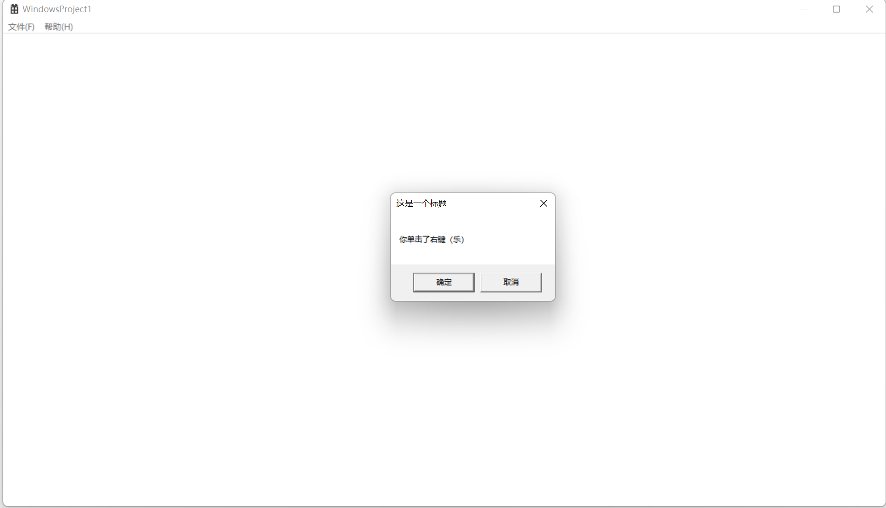
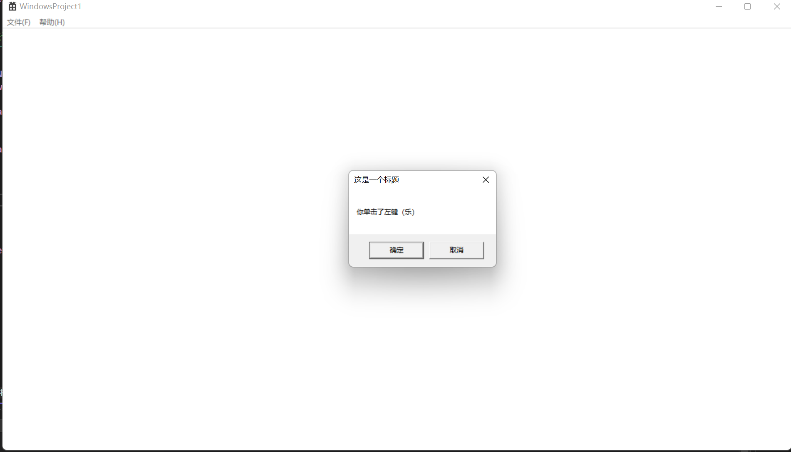
读取文件demo
在Windows下，使用
CreateFile 宏来打开并创建一个文件句柄！
from Microsoft API
read file
我们使用readFile来读取文件：
#include<Windows.h>
#include<stdio.h>
#include<iostream>
#define BUFSIZE 256
#include<tchar.h>11
int main()
{
setlocale(LC_ALL, "zh_CN.UTF-8"); // 设置正确的编码环境，防止读取乱码！
HANDLE hFileRead;
// 创建文件句柄
hFileRead = CreateFile(L"1.txt", GENERIC_READ, FILE_SHARE_READ, \
NULL, OPEN_EXISTING, FILE_ATTRIBUTE_NORMAL, NULL);
if (hFileRead == INVALID_HANDLE_VALUE) {
printf("Error in open the file:%x",GetLastError());
}
DWORD nIn = 0;
CHAR buffer[BUFSIZE];
while (ReadFile(hFileRead, buffer, BUFSIZE, &nIn, NULL) && nIn > 0) {
printf("%s\n", buffer);
}
CloseHandle(hFileRead);
}

createFileW 函数 (fileapi.h)
创建或打开文件或 I/O 设备。 最常用的 I/O 设备如下所示：文件、文件流、目录、物理磁盘、卷、控制台缓冲区、磁带驱动器、通信资源、mailslot 和管道。 该函数返回一个句柄，该句柄可用于访问不同类型的 I/O 的文件或设备，具体取决于文件或设备以及指定的标志和属性。
若要将此操作作为事务处理操作执行，这会导致可用于事务处理 I/O 的句柄，请使用 CreateFileTransacted 函数。
HANDLE CreateFileW(
[in] LPCWSTR lpFileName,
[in] DWORD dwDesiredAccess,
[in] DWORD dwShareMode,
[in, optional] LPSECURITY_ATTRIBUTES lpSecurityAttributes,
[in] DWORD dwCreationDisposition,
[in] DWORD dwFlagsAndAttributes,
[in, optional] HANDLE hTemplateFile
);参数
[in] lpFileName
要创建或打开的文件或设备的名称。 可以在此名称中使用正斜杠 (/) 或反斜杠 () 。
在此函数的 ANSI 版本中，名称限制为 MAX_PATH 个字符。 若要将此限制扩展到 32，767 宽字符，请使用此 Unicode 版本的函数，并将“\\？\”前面附加到路径。 有关详细信息，请参阅命名文件、路径和命名空间。
有关特殊设备名称的信息，请参阅 定义 MS-DOS 设备名称。
若要创建文件流，请指定文件的名称、冒号，然后指定流的名称。 有关详细信息，请参阅 文件流。
提示从Windows 10版本 1607 开始，对于此函数的 unicode 版本 (CreateFileW) ，你可以选择加入以删除MAX_PATH限制，而无需附加“\\？\”。 有关详细信息，请参阅 命名文件、路径和命名空间 的“最大路径长度限制”部分。
[in] dwDesiredAccess
请求对文件或设备的访问权限，可汇总为读取、写入或两者均不) 。
最常用的值是 GENERIC_READ、 GENERIC_WRITE或两者 () GENERIC_READ | GENERIC_WRITE 。 有关详细信息，请参阅 通用访问权限、 文件安全性和访问权限、 文件访问权限常量和 ACCESS_MASK。
如果此参数为零，则应用程序可以在不访问该文件或设备的情况下查询某些元数据，例如文件、目录或设备属性，即使 拒绝了GENERIC_READ 访问。
不能请求与已打开句柄的打开请求中 dwShareMode 参数指定的共享模式冲突的访问模式。
有关详细信息，请参阅本主题的“备注”部分和 “创建和打开文件”。
[in] dwShareMode
文件或设备请求的共享模式，可以读取、写入、删除、所有这些或无 (引用下表) 。 对属性或扩展属性的访问请求不受此标志的影响。
如果此参数为零且 CreateFile 成功，则文件或设备无法共享，并且无法在文件或设备的句柄关闭之前再次打开。 有关详细信息，请参见“备注”部分。
无法请求与具有打开句柄的现有请求中指定的访问模式冲突的共享模式。 CreateFile 将失败， GetLastError 函数将返回 ERROR_SHARING_VIOLATION。
若要启用进程在打开文件或设备时共享文件或设备，请使用以下一个或多个值的兼容组合。 有关此参数与 dwDesiredAccess 参数的有效组合的详细信息，请参阅 创建和打开文件。
注意 无论进程上下文如何，每个打开句柄的共享选项都将有效，直到该句柄关闭。
| Value | 含义 |
|---|---|
| 00x00000000 | 如果文件或设备请求删除、读取或写入访问权限，则阻止对文件或设备上的后续打开操作。 |
| FILE_SHARE_DELETE0x00000004 | 在文件或设备上启用后续打开操作以请求删除访问权限。否则，如果文件或设备请求删除访问权限，则无法打开该文件或设备。如果未指定此标志，但文件或设备已打开以删除访问权限，则函数将失败。注意 删除访问权限允许删除和重命名操作。 |
| FILE_SHARE_READ0x00000001 | 在文件或设备上启用后续打开操作以请求读取访问权限。否则，如果文件或设备请求读取访问权限，则无法打开该文件或设备。如果未指定此标志，但文件或设备已打开以供读取访问，则函数将失败。 |
| FILE_SHARE_WRITE0x00000002 | 在文件或设备上启用后续打开操作以请求写入访问权限。否则，如果文件或设备请求写入访问权限，则无法打开该文件或设备。如果未指定此标志，但文件或设备已打开进行写入访问或具有写入访问权限的文件映射，则函数将失败。 |
[in, optional] lpSecurityAttributes 指向包含两个独立但相关数据成员的 SECURITY_ATTRIBUTES) 结构的指针：可选的安全描述符，以及一个布尔值，该值确定返回的句柄是否可以由子进程继承。
此参数可以为 NULL。
如果此参数为 NULL，则 由 CreateFile 返回的句柄不能由应用程序可能创建的任何子进程继承，并且与返回的句柄关联的文件或设备获取默认的安全描述符。
结构的 lpSecurityDescriptor 成员指定文件或设备的 SECURITY_DESCRIPTOR 。 如果此成员为 NULL，则会为与返回的句柄关联的文件或设备分配一个默认的安全描述符。
CreateFile 在打开现有文件或设备时忽略 lpSecurityDescriptor 成员，但继续使用 bInheritHandle 成员。
结构的 bInheritHandle 成员指定是否可以继承返回的句柄。
有关详细信息，请参见“备注”部分。
[in] dwCreationDisposition 对存在或不存在的文件或设备执行的操作。
对于文件以外的设备，此参数通常设置为 OPEN_EXISTING。
有关详细信息，请参见“备注”部分。
此参数必须是以下值之一，不能合并：
| Value | 含义 |
|---|---|
| CREATE_ALWAYS2 | 始终创建新文件。如果指定的文件存在且可写，则函数将覆盖文件、函数成功，最后错误代码设置为 ERROR_ALREADY_EXISTS (183) 。如果指定的文件不存在且路径有效，则会创建一个新文件，该函数成功，最后一个错误代码设置为零。有关详细信息，请参阅本主题的“备注”部分。 |
| CREATE_NEW1 | 仅当该文件尚不存在时才创建一个新文件。如果指定的文件存在，函数将失败，最后一个错误代码设置为 ERROR_FILE_EXISTS ( 80) 。如果指定的文件不存在并且是可写位置的有效路径，则会创建新文件。 |
| OPEN_ALWAYS4 | 始终打开文件。如果指定文件存在，则函数成功，最后一个错误代码设置为 ERROR_ALREADY_EXISTS ( 183) 。如果指定的文件不存在并且是可写位置的有效路径，则函数将创建一个文件，最后一个错误代码设置为零。 |
| OPEN_EXISTING3 | 仅当文件或设备存在时，才打开该文件或设备。如果指定的文件或设备不存在，函数将失败，最后一个错误代码设置为 ERROR_FILE_NOT_FOUND ( 2) 。有关设备的详细信息，请参阅“备注”部分。 |
| TRUNCATE_EXISTING5 | 打开文件并截断该文件，使其大小为零字节，仅当它存在时。如果指定的文件不存在，函数将失败，最后一个错误代码设置为 ERROR_FILE_NOT_FOUND (2) 。调用过程必须打开文件，并将 GENERIC_WRITE 位设置为 dwDesiredAccess 参数的一部分。 |
[in] dwFlagsAndAttributes 文件或设备属性和标志， FILE_ATTRIBUTE_NORMAL 是文件最常见的默认值。
此参数可以包含可用文件属性的任意组合， (FILE_ATTRIBUTE_*) 。 所有其他文件属性都替代 FILE_ATTRIBUTE_NORMAL。
此参数还可以包含标志组合 ， (FILE_FLAG_) 来控制文件或设备缓存行为、访问模式和其他特殊用途标志。 这些值与任何 FILE_ATTRIBUTE_ 值结合使用。
此参数还可以通过指定 SECURITY_SQOS_PRESENT 标志来包含安全服务质量 (SQOS) 信息。 下表显示了其他与 SQOS 相关的标志信息，这些属性和标志表如下。
注意当CreateFile 打开现有文件时，它通常将文件标志与现有文件的文件属性组合在一起，并忽略作为 dwFlagsAndAttributes 的一部分提供的任何文件属性。 “创建和打开文件”中详细介绍了特殊情况。
以下某些文件属性和标志只能应用于文件，不一定是 CreateFile 可以打开的所有其他类型的设备。 有关详细信息，请参阅本主题的“备注”部分和 “创建和打开文件”。
有关对文件属性的更高级访问，请参阅 SetFileAttributes。 有关所有文件属性及其值和说明的完整列表，请参阅 文件属性常量。
| Attribute | 含义 |
|---|---|
| FILE_ATTRIBUTE_ARCHIVE32 (0x20) | 该文件应存档。 应用程序使用此属性来标记要备份或删除的文件。 |
| FILE_ATTRIBUTE_ENCRYPTED16384 (0x4000) | 此文件或目录已加密。 对于文件来说，表示文件中的所有数据都是加密的。 对于目录，这意味着加密是新创建的文件和子目录的默认值。 有关详细信息，请参阅 文件加密。如果还指定 了FILE_ATTRIBUTE_SYSTEM ，则此标志无效。家庭版、家庭高级版、初学者版或 ARM 版 Windows 不支持此标志。 |
| FILE_ATTRIBUTE_HIDDEN2 (0x2) | 文件被隐藏。 不要将其包含在普通目录列表中。 |
| FILE_ATTRIBUTE_NORMAL128 (0x80) | 该文件没有设置其他属性。 此属性仅在单独使用时有效。 |
| FILE_ATTRIBUTE_OFFLINE4096 (0x1000) | 文件的数据不能立即可用。 此属性指示文件数据以物理方式移动到脱机存储。 此属性由远程存储（分层存储管理软件）使用。 应用程序不应随意更改此属性。 |
| FILE_ATTRIBUTE_READONLY1 (0x1) | 文件为只读文件。 应用程序可以读取文件，但无法写入或删除该文件。 |
| FILE_ATTRIBUTE_SYSTEM4 (0x4) | 该文件是操作系统的一部分或完全使用的文件。 |
| FILE_ATTRIBUTE_TEMPORARY256 (0x100) | 该文件用于临时存储。有关详细信息，请参阅本主题的 “缓存行为 ”部分。 |
| 标志 | 含义 |
|---|---|
| FILE_FLAG_BACKUP_SEMANTICS0x02000000 | 正在为备份或还原操作打开或创建该文件。 系统确保调用进程在进程具有 SE_BACKUP_NAME 和 SE_RESTORE_NAME 特权时替代文件安全检查。 有关详细信息，请参阅 更改令牌中的特权。必须设置此标志才能获取目录的句柄。 目录句柄可以传递给某些函数，而不是文件句柄。 有关详细信息，请参见“备注”部分。 |
| FILE_FLAG_DELETE_ON_CLOSE0x04000000 | 文件在其所有句柄都关闭后立即被删除，其中包括指定的句柄和任何其他打开或重复的句柄。如果文件存在现有的打开句柄，则调用会失败，除非这些句柄都使用 FILE_SHARE_DELETE 共享模式打开。针对文件的后续打开请求将失败，除非指定 FILE_SHARE_DELETE 共享模式。 |
| FILE_FLAG_NO_BUFFERING0x20000000 | 文件或设备正在打开，没有系统缓存来读取和写入数据。 此标志不会影响硬盘缓存或内存映射文件。使用 FILE_FLAG_NO_BUFFERING 标志成功使用 CreateFile 打开的文件有严格的要求，有关详细信息，请参阅文件缓冲。 |
| FILE_FLAG_OPEN_NO_RECALL0x00100000 | 请求文件数据，但它应继续位于远程存储中。 不应将其传输回本地存储。 此标志供远程存储系统使用。 |
| FILE_FLAG_OPEN_REPARSE_POINT0x00200000 | 不会进行正常的 重新分析点 处理; CreateFile 将尝试打开重新分析点。 打开文件时，将返回文件句柄，无论控制重新分析点的筛选器是否正常运行。此标志不能与 CREATE_ALWAYS 标志一起使用。如果文件不是重新分析点，则忽略此标志。有关详细信息，请参见“备注”部分。 |
| FILE_FLAG_OVERLAPPED0x40000000 | 文件或设备正在为异步 I/O 打开或创建。在此句柄上完成后续 I/O 操作时， 在 OVERLAPPED 结构中指定的事件将设置为信号状态。如果指定了此标志，则该文件可用于同时读取和写入操作。如果未指定此标志，则即使对读取和写入函数的调用指定 了 OVERLAPPED 结构，I/O 操作也会序列化。有关使用此标志创建的文件句柄时的注意事项，请参阅本主题的 同步和异步 I/O 句柄 部分。 |
| FILE_FLAG_POSIX_SEMANTICS0x01000000 | 访问将根据 POSIX 规则进行。 这包括允许具有名称的多个文件，仅在支持该命名的文件系统时有所不同。 使用此选项时应小心，因为使用此标志创建的文件可能无法由为 MS-DOS 或 16 位 Windows 编写的应用程序访问。 |
| FILE_FLAG_RANDOM_ACCESS0x10000000 | 访问是随机的。 系统可将此选项用作优化文件缓存的提示。如果文件系统不支持缓存的 I/O 和 FILE_FLAG_NO_BUFFERING，则此标志无效。有关详细信息，请参阅本主题的 “缓存行为 ”部分。 |
| FILE_FLAG_SESSION_AWARE0x00800000 | 文件或设备正在使用会话感知打开。 如果未指定此标志，则会话中的每个会话设备 (（例如使用 RemoteFX USB 重定向的设备) ）无法由会话 0 中运行的进程打开。 对于不在会话 0 中的调用方，此标志无效。 此标志仅在 Windows 的服务器版本上受支持。Windows Server 2008 R2 和 Windows Server 2008： Windows Server 2012之前不支持此标志。 |
| FILE_FLAG_SEQUENTIAL_SCAN0x08000000 | 访问旨在从头到尾的顺序。 系统可将此选项用作优化文件缓存的提示。如果读取隐藏 (（即使用反向扫描) ），则不应使用此标志。如果文件系统不支持缓存的 I/O 和 FILE_FLAG_NO_BUFFERING，则此标志无效。有关详细信息，请参阅本主题的 “缓存行为 ”部分。 |
| FILE_FLAG_WRITE_THROUGH0x80000000 | 写入操作不会经历任何中间缓存，它们将直接转到磁盘。有关详细信息，请参阅本主题的 “缓存行为 ”部分。 |
dwFlagsAndAttributes 参数还可以指定 SQOS 信息。 有关详细信息，请参阅 模拟级别。 当调用应用程序将 SECURITY_SQOS_PRESENT 标志指定为 dwFlagsAndAttributes 的一部分时，它还可以包含以下一个或多个值。
| 安全标志 | 含义 |
|---|---|
| SECURITY_ANONYMOUS | 模拟匿名模拟级别的客户端。 |
| SECURITY_CONTEXT_TRACKING | 安全跟踪模式是动态的。 如果未指定此标志，则安全跟踪模式是静态的。 |
| SECURITY_DELEGATION | 模拟委托模拟级别的客户端。 |
| SECURITY_EFFECTIVE_ONLY | 只有客户端安全上下文的已启用方面可供服务器使用。 如果未指定此标志，则客户端安全上下文的所有方面都可用。这允许客户端限制服务器在模拟客户端时可以使用的组和特权。 |
| SECURITY_IDENTIFICATION | 模拟标识模拟级别的客户端。 |
| SECURITY_IMPERSONATION | 模拟模拟级别的客户端。 如果未指定其他标志以及 SECURITY_SQOS_PRESENT 标志，则这是默认行为。 |
[in, optional] hTemplateFile 具有 GENERIC_READ 访问权限的模板文件的有效句柄。 模板文件为正在创建的文件提供文件属性和扩展属性。
此参数可以为 NULL。
打开现有文件时， CreateFile 将忽略此参数。
打开新的加密文件时，该文件将从其父目录继承任意访问控制列表。 有关详细信息，请参阅 文件加密。
返回值
如果函数成功，则返回值是指定文件、设备、命名管道或邮件槽的打开句柄。
如果函数失败，则返回值为 INVALID_HANDLE_VALUE。 要获得更多的错误信息，请调用 GetLastError。
注解
CreateFile 最初专为文件交互而开发，但此后已扩展和增强，以包括 Windows 开发人员可用的大多数其他类型的 I/O 设备和机制。 本部分尝试介绍开发人员在不同上下文中使用不同的 I/O 类型使用 CreateFile 时可能遇到的各种问题。 仅当专门引用存储在文件系统上实际文件中的数据时，文本才会尝试使用单词 文件 。 但是，某些文件用法可能更普遍地引用支持类似 文件的 I/O 对象。 由于前面提到的历史原因，这种自由使用术语 文件 在常量名称和参数名称中尤其普遍。
使用 CreateFile 返回的对象句柄完成应用程序后，请使用 CloseHandle 函数关闭句柄。 这不仅释放了系统资源，而且可以对共享文件或设备以及将数据提交到磁盘等内容产生更广泛的影响。 本主题中会相应地说明具体内容。
Windows Server 2003 和 Windows XP： 如果尝试打开文件或目录以在远程计算机上删除，则发生共享冲突，当 dwDesiredAccess 参数的值是使用任何其他访问标志 (0x00010000) OR’ed 的 DELETE 访问标志，并且远程文件或目录尚未使用FILE_SHARE_DELETE打开。 为了避免此方案中的共享冲突，请仅打开具有 DELETE 访问权限的远程文件或目录，或者调用 DeleteFile ，而无需首先打开文件或目录进行删除。
某些文件系统（如 NTFS 文件系统）支持单个文件和目录的压缩或加密。 对于具有此支持的装载文件系统的卷，新文件继承其目录的压缩和加密属性。
不能使用 CreateFile 来控制文件或目录上的压缩、解压缩或解密。 有关详细信息，请参阅 创建和打开文件、 文件压缩和解压缩以及 文件加密。
Windows Server 2003 和 Windows XP： 出于向后兼容性目的，在 lpSecurityAttributes 中指定安全描述符时，CreateFile 不会应用继承规则。 为了支持继承，以后查询此文件的安全描述符的函数可能会启发性地确定并报告继承是否有效。 有关详细信息，请参阅 可继承 ACE 的自动传播。
如前所述，如果 lpSecurityAttributes 参数为 NULL，则应用程序可能创建的任何子进程都无法继承 CreateFile 返回的句柄。 有关此参数的以下信息也适用：
- 如果 bInheritHandle 成员变量不是 FALSE，这是任何非零值，则可以继承句柄。 因此，如果不希望句柄可继承，则此结构成员必须正确初始化为 FALSE 。
- 访问控制列表 (文件或目录的默认安全描述符中的 ACL) 继承自其父目录。
- 目标文件系统必须支持 lpSecurityDescriptor 成员对文件和目录的安全性，才能对其产生影响，这可以通过 使用 GetVolumeInformation 来确定。
在Windows 8和Windows Server 2012中，以下技术支持此函数。
| 技术 | 支持 |
|---|---|
| 服务器消息块 (SMB) 3.0 协议 | 是 |
| SMB 3.0 透明故障转移 (TFO) | 请参阅备注 |
| 具有横向扩展文件共享的 SMB 3.0 (SO) | 请参阅备注 |
| 群集共享卷文件系统 (CsvFS) | 是 |
| 弹性文件系统 (ReFS) | 是 |
请注意，如果对已打开的备用数据流的文件执行，具有取代处置的 CreateFile 将失败。
符号链接行为
如果对此函数的调用创建文件，则行为没有变化。 此外，请考虑有关 FILE_FLAG_OPEN_REPARSE_POINT的以下信息：
- 如果指定了FILE_FLAG_OPEN_REPARSE_POINT
- 如果打开现有文件并且它是符号链接，则返回的句柄是符号链接的句柄。
- 如果指定 了TRUNCATE_EXISTING 或 FILE_FLAG_DELETE_ON_CLOSE ，则受影响的文件是符号链接。
- 如果未指定FILE_FLAG_OPEN_REPARSE_POINT：
- 如果打开现有文件并且它是符号链接，则返回的句柄是目标句柄。
- 如果指定 CREATE_ALWAYS、 TRUNCATE_EXISTING或 FILE_FLAG_DELETE_ON_CLOSE ，则受影响的文件是目标。
缓存行为
CreateFile 使用 dwFlagsAndAttributes 参数的多个可能值来控制或影响系统缓存与句柄关联的数据的方式。 它们是：
- FILE_FLAG_NO_BUFFERING
- FILE_FLAG_RANDOM_ACCESS
- FILE_FLAG_SEQUENTIAL_SCAN
- FILE_FLAG_WRITE_THROUGH
- FILE_ATTRIBUTE_TEMPORARY
如果未指定这些标志，系统将使用默认的常规用途缓存方案。 否则，系统缓存的行为与为每个标志指定。
不应合并其中一些标志。 例如，将 FILE_FLAG_RANDOM_ACCESS 与 FILE_FLAG_SEQUENTIAL_SCAN 相结合是自败。
指定 FILE_FLAG_SEQUENTIAL_SCAN 标志可以提高使用顺序访问读取大型文件的应用程序的性能。 对于主要按顺序读取大型文件的应用程序，性能提升可能更加明显，但偶尔会跳过小范围的字节。 如果应用程序移动文件指针进行随机访问，则很可能不会发生最佳缓存性能。 但是，仍可以保证正确的操作。
标志FILE_FLAG_WRITE_THROUGH和FILE_FLAG_NO_BUFFERING是独立的，可以组合在一起。
如果使用 FILE_FLAG_WRITE_THROUGH 但 未指定FILE_FLAG_NO_BUFFERING ，以便系统缓存生效，则数据会写入系统缓存，但不会延迟地刷新到磁盘。
如果 同时指定了FILE_FLAG_WRITE_THROUGH 和 FILE_FLAG_NO_BUFFERING ，以便系统缓存无效，则数据会立即刷新到磁盘，而无需通过 Windows 系统缓存。 操作系统还会向永久性媒体请求硬盘本地硬件缓存的写入。
注意 并非所有硬盘硬件都支持此写通功能。
正确使用 FILE_FLAG_NO_BUFFERING 标志需要特殊的应用程序注意事项。 有关详细信息，请参阅 文件缓冲。
通过 FILE_FLAG_WRITE_THROUGH 的写通请求还会导致 NTFS 刷新任何元数据更改，例如时间戳更新或重命名操作，这会导致处理请求。 因此， FILE_FLAG_WRITE_THROUGH 标志通常与 FILE_FLAG_NO_BUFFERING 标志一起使用，作为每次写入后调用 FlushFileBuffers 函数的替代项，这可能会导致不必要的性能损失。 将这些标志一起使用可避免这些处罚。 有关文件和元数据缓存的一般信息，请参阅 文件缓存。
当FILE_FLAG_NO_BUFFERING与FILE_FLAG_OVERLAPPED结合使用时，标志提供最大的异步性能，因为 I/O 不依赖于内存管理器的同步操作。 但是，某些 I/O 操作需要更多时间，因为缓存中未保留数据。 此外，在创建空文件) 时，文件元数据仍可能 (缓存。 若要确保元数据刷新到磁盘，请使用 FlushFileBuffers 函数。
如果有足够的缓存内存可用，则指定 FILE_ATTRIBUTE_TEMPORARY 属性会导致文件系统避免将数据写回到大容量存储，因为应用程序在关闭句柄后删除临时文件。 在这种情况下，系统可以完全避免写入数据。 尽管它不直接控制数据缓存的方式与前面提到的标志相同， 但FILE_ATTRIBUTE_TEMPORARY 属性确实会告知系统在系统缓存中尽可能多地保留，而无需写入，因此可能对某些应用程序感到担忧。
文件
如果重命名或删除文件，然后在不久后还原该文件，系统将在缓存中搜索要还原的文件信息。 缓存信息包括其短/长名称对和创建时间。
如果在之前调用 DeleteFile 时挂起删除的文件上调用 CreateFile，该函数将失败。 操作系统会延迟文件删除，直到文件的所有句柄都关闭。 GetLastError 返回 ERROR_ACCESS_DENIED。
dwDesiredAccess 参数可以是零，允许应用程序在不访问文件的情况下查询文件属性（如果应用程序正在运行且具有足够的安全设置）。 这可用于测试文件是否存在，而无需打开该文件进行读取和/或写入访问，或获取有关文件或目录的其他统计信息。 请参阅 获取和设置文件信息和GetFileInformationByHandle。
如果指定 了CREATE_ALWAYS 和 FILE_ATTRIBUTE_NORMAL ， 则 CreateFile 将失败，并将最后一个错误设置为 ERROR_ACCESS_DENIED （如果文件存在并且具有 FILE_ATTRIBUTE_HIDDEN 或 FILE_ATTRIBUTE_SYSTEM 属性）。 若要避免此错误，请指定与现有文件相同的属性。
当应用程序跨网络创建文件时，最好将 dwDesiredAccess 用于 dwDesiredAccess，而不是单独使用 GENERIC_WRITE。GENERIC_READ | GENERIC_WRITE 生成的代码速度更快，因为重定向程序可以使用缓存管理器，并发送更少的 SMB 和更多数据。 这种组合还避免了写入网络中的文件偶尔会返回 ERROR_ACCESS_DENIED的问题。
有关详细信息，请参阅 “创建和打开文件”。
同步和异步 I/O 句柄
CreateFile 用于创建同步或异步的文件或设备句柄。 同步句柄的行为使使用该句柄的 I/O 函数调用被阻止，直到它们完成，而异步文件句柄使系统能够立即从 I/O 函数调用返回，无论它们是否完成了 I/O 操作。 如前所述，此同步与异步行为通过指定 dwFlagsAndAttributes 参数中的FILE_FLAG_OVERLAPPED来确定。 使用异步 I/O 时存在多种复杂性和潜在缺陷;有关详细信息，请参阅 同步和异步 I/O。
文件流
在 NTFS 文件系统上，可以使用 CreateFile 在文件中创建单独的流。 有关详细信息，请参阅 文件流。
目录
应用程序无法使用 CreateFile 创建目录，因此对于此用例，只有 OPEN_EXISTING 值对 dwCreationDisposition 有效。 若要创建目录，应用程序必须调用 CreateDirectory 或 CreateDirectoryEx。
若要使用 CreateFile 打开目录，请将 FILE_FLAG_BACKUP_SEMANTICS 标志指定为 dwFlagsAndAttributes 的一部分。 在没有 SE_BACKUP_NAME 和 SE_RESTORE_NAME 特权的情况下使用此标志时，仍适用适当的安全检查。
使用 CreateFile 在对 FAT 或 FAT32 文件系统卷进行碎片整理期间打开目录时，请不要指定 MAXIMUM_ALLOWED 访问权限。 如果这样做，则拒绝对目录的访问。 请改为指定 GENERIC_READ 访问权限。
有关详细信息，请参阅 “关于目录管理”。
物理磁盘和卷
对磁盘或卷的直接访问受到限制。
Windows Server 2003 和 Windows XP： 以这种方式不限制对磁盘或卷的直接访问。
可以使用 CreateFile 函数打开物理磁盘驱动器或卷，该驱动器返回直接访问存储设备 (DASD) 句柄，该句柄可与 DeviceIoControl 函数一起使用。 这样，便可以直接访问磁盘或卷，例如分区表等磁盘元数据。 但是，这种类型的访问也会向潜在的数据丢失公开磁盘驱动器或卷，因为使用此机制对磁盘进行不正确的写入可能会使其内容无法访问操作系统。 为了确保数据完整性，请务必熟悉 DeviceIoControl ，以及其他 API 的行为方式与直接访问句柄不同，而不是文件系统句柄。
必须满足以下要求才能成功进行此类调用：
- 调用方必须具有管理权限。 有关详细信息，请参阅 使用特殊特权运行。
- dwCreationDisposition 参数必须具有OPEN_EXISTING标志。
- 打开卷或软盘时， dwShareMode 参数必须具有 FILE_SHARE_WRITE 标志。
注意*dwDesiredAccess* 参数可以是零，允许应用程序在不访问设备的情况下查询设备属性。 这适用于应用程序来确定软盘驱动器的大小及其支持的格式，而无需驱动器中的软盘磁盘，例如。 它还可用于读取统计信息，而无需更高级别的数据读取/写入权限。
打开物理驱动器 x：时， lpFileName 字符串应采用以下形式：“.\PhysicalDriveX”。 硬盘编号从零开始。 下表显示了物理驱动器字符串的一些示例。
| String | 含义 |
|---|---|
| “\.\PhysicalDrive0” | 打开第一个物理驱动器。 |
| “\.\PhysicalDrive2” | 打开第三个物理驱动器。 |
若要获取卷的物理驱动器标识符，请打开卷的句柄，并使用 IOCTL_VOLUME_GET_VOLUME_DISK_EXTENTS 调用 DeviceIoControl 函数。 此控制代码返回每个卷的一个或多个盘区的磁盘数和偏移量;卷可以跨越多个物理磁盘。
有关打开物理驱动器的示例，请参阅 调用 DeviceIoControl。
例如，打开卷或可移动媒体驱动器 (时，软盘驱动器或闪存内存拇指驱动器) ， lpFileName 字符串应采用以下形式：“.*X*：”。 请勿使用尾随反斜杠 () ，指示驱动器的根目录。 下表显示了驱动器字符串的一些示例。
| String | 含义 |
|---|---|
| “\.\A：” | 打开软盘驱动器 A。 |
| “\.\C：” | 打开 C： 卷。 |
| “\.\C：\” | 打开 C： 卷的文件系统。 |
还可以通过引用其卷名称打开卷。 有关详细信息，请参阅 命名卷。
卷包含一个或多个装载的文件系统。 即使 CreateFile 中未指定非缓存选项，也可以按特定文件系统的任意方式打开卷句柄。 应假定所有 Microsoft 文件系统都以非缓存的形式打开卷句柄。 对文件的非缓存 I/O 的限制也适用于卷。
即使数据未缓存，文件系统也可能不需要缓冲区对齐。 但是，如果在打开卷时指定了非缓存选项，则会强制实施缓冲区对齐方式，而不管卷上的文件系统如何。 建议在所有文件系统上以非缓存方式打开卷句柄，并遵循非缓存 I/O 限制。
注意 若要读取或写入卷的最后几个扇区，必须调用 DeviceIoControl 并指定 FSCTL_ALLOW_EXTENDED_DASD_IO。 这表示文件系统驱动程序不会对分区读取或写入调用执行任何 I/O 边界检查。 相反，边界检查由设备驱动程序执行。
更改器设备
DeviceIoControl 的 IOCTL_CHANGER_* 控制代码接受变更器设备的句柄。 若要打开变更器设备，请使用以下格式的文件名：“\.\Changerx”，其中 x 是一个数字，指示要打开的设备，从零开始。 若要在用 C 或 C++ 编写的应用程序中打开变更器设备零，请使用以下文件名：“\\.\\Changer0”。
磁带驱动器
可以使用以下格式的文件名打开磁带驱动器：“\.\TAPEx”，其中 x 是一个数字，指示要打开的驱动器，从磁带驱动器零开始。 若要在以 C 或 C++ 编写的应用程序中打开磁带驱动器零，请使用以下文件名：“\\.\\TAPE0”。
有关详细信息，请参阅 备份。
通信资源
CreateFile 函数可以创建通信资源的句柄，例如串行端口 COM1。 对于通信资源， dwCreationDisposition 参数必须 OPEN_EXISTING， dwShareMode 参数必须是零 (独占访问) ， 并且 hTemplateFile 参数必须为 NULL。 可以指定读取、写入或读/写访问权限，并且可以为重叠 I/O 打开句柄。
若要指定大于 9 的 COM 端口号，请使用以下语法：“.\COM10”。 此语法适用于允许指定 COM 端口号的所有端口号和硬件。
有关通信的详细信息，请参阅 通信。
机
CreateFile 函数可以创建控制台输入 (CONIN$) 句柄。 如果进程由于继承或重复而具有打开的句柄，则它还可以创建活动屏幕缓冲区 (CONOUT$) 的句柄。 调用进程必须附加到继承的控制台或 由 AllocConsole 函数分配的控制台。 对于控制台句柄，请按如下所示设置 CreateFile 参数。
| 参数 | 值 | |
|---|---|---|
| lpFileName | 使用 CONIN$ 值指定控制台输入。使用 CONOUT$ 值指定控制台输出。CONIN$ 获取控制台输入缓冲区的句柄，即使 SetStdHandle 函数重定向标准输入句柄。 若要获取标准输入句柄，请使用 GetStdHandle 函数。CONOUT$ 获取活动屏幕缓冲区的句柄，即使 SetStdHandle 重定向标准输出句柄。 若要获取标准输出句柄，请使用 GetStdHandle。 | |
| dwDesiredAccess | `GENERIC_READ | GENERIC_WRITE` 首选，但任一限制访问。 |
| dwShareMode | 打开 CONIN$时，请指定 FILE_SHARE_READ。 打开 CONOUT$时，请指定 FILE_SHARE_WRITE。如果调用进程继承控制台，或者子进程应能够访问控制台，则必须是 `FILE_SHARE_READ | FILE_SHARE_WRITE`此参数。 |
| lpSecurityAttributes | 如果希望继承控制台，SECURITY_ATTRIBUTES结构的)bInheritHandle 成员必须为 TRUE。 | |
| dwCreationDisposition | 使用 CreateFile 打开控制台时，应指定OPEN_EXISTING。 | |
| dwFlagsAndAttributes | 已忽略。 | |
| hTemplateFile | 已忽略。 |
下表显示了 dwDesiredAccess 和 lpFileName 的各种设置。
| lpFileName | dwDesiredAccess | 结果 | |
|---|---|---|---|
| “CON” | GENERIC_READ | 打开用于输入的控制台。 | |
| “CON” | GENERIC_WRITE | 打开用于输出的控制台。 | |
| “CON” | `GENERIC_READ | GENERIC_WRITE` | 导致 CreateFile 失败; GetLastError 返回 ERROR_FILE_NOT_FOUND。 |
Mailslots
如果 CreateFile 打开 mailslot 的客户端端，则函数将返回 INVALID_HANDLE_VALUE 如果 mailslot 客户端尝试在 mailslot 服务器使用 CreateMailSlot 函数创建本地 mailslot 之前打开本地 mailslot 。
有关详细信息，请参阅 Mailslots。
管道
如果 CreateFile 打开命名管道的客户端端，该函数将使用处于侦听状态的命名管道的任何实例。 打开过程可以根据需要多次复制句柄，但在打开该句柄之后，另一个客户端无法打开命名管道实例。 打开管道时指定的访问必须与 CreateNamedPipe 函数的 dwOpenMode 参数中指定的访问兼容。
如果在此操作之前未在服务器上成功调用 CreateNamedPipe 函数，则管道将不存在， 并且 CreateFile 将失败 并出现ERROR_FILE_NOT_FOUND。
如果至少有一个活动管道实例，但服务器上没有可用的侦听器管道，这意味着所有管道实例当前都已连接， 则 CreateFile 会失败 并ERROR_PIPE_BUSY。
有关详细信息，请参阅 管道。
ReadFile 函数 (fileapi.h)
从指定的文件或输入/输出 (I/O) 设备读取数据。 如果设备支持，则读取发生在文件指针指定的位置。
此函数适用于同步操作和异步操作。 有关专为异步操作设计的类似函数，请参阅 ReadFileEx。
语法
BOOL ReadFile(
[in] HANDLE hFile,
[out] LPVOID lpBuffer,
[in] DWORD nNumberOfBytesToRead,
[out, optional] LPDWORD lpNumberOfBytesRead,
[in, out, optional] LPOVERLAPPED lpOverlapped
);参数
[in] hFile设备句柄 (例如文件、文件流、物理磁盘、卷、控制台缓冲区、磁带驱动器、套接字、通信资源、mailslot 或管道) 。
必须使用读取访问权限创建 hFile 参数。 有关详细信息，请参阅 通用访问权限 和 文件安全性和访问权限。
对于异步读取操作，hFile 可以是使用 CreateFile 函数的FILE_FLAG_OVERLAPPED标志打开的任何句柄，也可以是套接字或 accept 函数返回的套接字句柄。
[out] lpBuffer指向接收从文件或设备读取数据的缓冲区的指针。
此缓冲区必须在读取操作期间保持有效。 在读取操作完成之前，调用方不得使用此缓冲区。
[in] nNumberOfBytesToRead要读取的最多字节数。
[out, optional] lpNumberOfBytesRead指向使用同步 hFile 参数时接收读取的字节数的变量的指针。 ReadFile 将此值设置为零，然后再执行任何工作或错误检查。 如果这是一个异步操作，请对此参数使用 NULL ，以避免潜在的错误结果。
仅当 lpOverlapped 参数不为 NULL 时，此参数才可为 NULL。
Windows 7： 此参数不能为 NULL。
有关详细信息，请参见“备注”部分。
[in, out, optional] lpOverlapped如果使用 FILE_FLAG_OVERLAPPED 打开 hFile 参数，则需要指向 OVERLAPPED 结构的指针，否则可为 NULL。
如果使用 FILE_FLAG_OVERLAPPED打开 hFile，则 lpOverlapped 参数必须指向有效且唯一的 OVERLAPPED 结构，否则该函数无法错误地报告读取操作已完成。
对于支持字节偏移量的 hFile ，如果使用此参数，则必须指定从文件或设备开始读取的字节偏移量。 通过设置 OVERLAPPED 结构的 Offset 和 OffsetHigh 成员来指定此偏移量。 对于不支持字节偏移量的 hFile，将忽略 Offset 和 OffsetHigh。
有关 lpOverlapped 和 FILE_FLAG_OVERLAPPED的不同组合的详细信息，请参阅“备注”部分和 “同步和文件位置 ”部分。
返回值
如果函数成功，则返回值为非零 (TRUE) 。
如果函数失败或异步完成，则返回值为零， (FALSE) 。 若要获取扩展的错误信息，请调用 GetLastError 函数。
注意GetLastError 代码ERROR_IO_PENDING不是失败;它指定读取操作正在异步等待完成。 有关详细信息，请参阅“备注”。
注解
发生以下情况之一时， ReadFile 函数将返回：
读取请求的字节数。
- 写入操作在管道的写入端完成。
- 正在使用异步句柄，读取正在异步发生。
- 发生错误。
每当有过多未完成的异步 I/O 请求时，ReadFile 函数可能会失败，**ERROR_INVALID_USER_BUFFER或ERROR_NOT_ENOUGH_MEMORY**。
若要取消所有挂起的异步 I/O 操作，请使用以下任一操作：
CancelIo - 此函数仅取消由指定文件句柄的调用线程发出的操作。
- CancelIoEx - 此函数取消指定文件句柄的线程发出的所有操作。
使用 CancelSynchronousIo 取消挂起的同步 I/O 操作。
取消的 I/O 操作已完成，错误 ERROR_OPERATION_ABORTED。
ReadFile 函数可能会失败，ERROR_NOT_ENOUGH_QUOTA，这意味着调用进程的缓冲区无法锁定页。 有关详细信息，请参阅 SetProcessWorkingSetSize。
如果某个文件的一部分被另一个进程锁定，并且读取操作与锁定部分重叠，则此函数将失败。
读取操作使用缓冲区时访问输入缓冲区可能会导致读取到该缓冲区的数据损坏。 在读取操作完成之前，应用程序不得读取、写入、重新分配或释放读取操作使用的输入缓冲区。 使用异步文件句柄时，这尤其有问题。 有关同步与异步文件句柄的其他信息，可以在 “同步和文件位置 ”部分以及 CreateFile 参考主题中找到。
可以使用具有控制台输入句柄的 ReadFile 从控制台输入缓冲区读取字符。 控制台模式确定 ReadFile 函数的确切行为。 默认情况下，控制台模式 ENABLE_LINE_INPUT，指示 ReadFile 应在到达回车前读取。 如果按 Ctrl+C，则调用成功，但 GetLastError 返回 ERROR_OPERATION_ABORTED。 有关详细信息，请参阅 CreateFile。
从通信设备读取时， ReadFile 的行为由当前通信超时确定为集，并使用 SetCommTimeouts 和 GetCommTimeouts 函数进行检索。 如果无法设置超时值，则可能会出现不可预知的结果。 有关通信超时的详细信息，请参阅 COMMTIMEOUTS。
如果 ReadFile 尝试从具有太小缓冲区的邮件图中读取，则函数返回 FALSE ， GetLastError 返回 ERROR_INSUFFICIENT_BUFFER。
使用 FILE_FLAG_NO_BUFFERING 标志成功使用 CreateFile 打开的文件有严格的要求。 有关详细信息，请参阅 文件缓冲。
如果使用 FILE_FLAG_OVERLAPPED 打开 hFile，则以下条件有效：
lpOverlapped 参数必须指向有效且唯一的 OVERLAPPED 结构，否则该函数可以错误地报告读取操作已完成。
- lpNumberOfBytesRead 参数应设置为 NULL。 使用 GetOverlappedResult 函数获取读取的实际字节数。 如果 hFile 参数与 I/O 完成端口相关联，则还可以通过调用 GetQueuedCompletionStatus 函数获取读取的字节数。
同步和文件位置
如果使用 FILE_FLAG_OVERLAPPED打开 hFile，则它是异步文件句柄;否则为同步。 使用 OVERLAPPED 结构的规则对每个结构略有不同，如前所述。
注意 如果为异步 I/O 打开文件或设备，则使用该句柄对 ReadFile 等函数的后续调用通常会立即返回，但对于被阻止的执行，也可以同步执行。 有关更多信息，请参见http://support.microsoft.com/kb/156932。
使用异步文件句柄的注意事项：
ReadFile 可能会在读取操作完成之前返回。 在此方案中， ReadFile 返回 FALSE ， GetLastError 函数返回 ERROR_IO_PENDING，这允许调用进程在系统完成读取操作时继续。
lpOverlapped
参数不得为
NULL
，应与以下事实一起使用：
- 尽管 在 OVERLAPPED 结构中指定的事件由系统自动设置和重置，但 在 OVERLAPPED 结构中指定的偏移量不会自动更新。
- ReadFile 在开始 I/O 操作时将事件重置为非对齐状态。
- 在 READ 操作完成时， 在 OVERLAPPED 结构中指定的事件设置为信号状态;直到该时间，读取操作被视为挂起。
- 由于读取操作从 在 OVERLAPPED 结构中指定的偏移量开始，并且 ReadFile 可能会在系统级读取操作完成 (读取挂起) 之前返回，因此，应用程序不应修改、释放或重用结构的任何其他部分，直到向事件发出信号 (（即） 读取完成) 。
- 如果在异步操作期间检测到文件结束 (EOF) ，则对该操作的 GetOverlappedResult 的调用将返回 FALSE ， GetLastError 返回 ERROR_HANDLE_EOF。
使用同步文件句柄的注意事项：
- 如果 lpOverlapped 为 NULL，则读取操作从当前文件位置开始， ReadFile 在操作完成之前不会返回，并且系统会在 ReadFile 返回之前更新文件指针。
- 如果 lpOverlapped 不是 NULL，则读取操作从 在 OVERLAPPED 结构中指定的偏移量开始， ReadFile 在读取操作完成之前不会返回。 系统在 ReadFile 返回之前更新 OVERLAPPED 偏移量和文件指针。
- 如果 lpOverlapped 为 NULL，则当同步读取操作到达文件末尾时， ReadFile 将返回 TRUE 并将设置为
*lpNumberOfBytesRead零。 - 如果 lpOverlapped 不是 NULL，则当同步读取操作到达文件末尾时， ReadFile 将返回 FALSE ， GetLastError 返回 ERROR_HANDLE_EOF。
有关详细信息，请参阅 CreateFile 和 同步和异步 I/O。
管道
如果使用匿名管道并且写入句柄已关闭，则 当 ReadFile 尝试使用管道的相应读取句柄进行读取时，函数将返回 FALSE ， GetLastError 返回 ERROR_BROKEN_PIPE。
如果在消息模式下读取命名管道，并且下一条消息的长度超过 nNumberOfBytesToRead 参数指定， ReadFile 将返回 FALSE ， GetLastError 返回 ERROR_MORE_DATA。 后续调用 ReadFile 或 PeekNamedPipe 函数可以读取消息的其余部分。
如果 ReadFile 在管道上返回 TRUE 时，lpNumberOfBytesRead 参数为零，则管道的另一端称为 WriteFile 函数，nNumberOfBytesToWrite 设置为零。
有关管道的详细信息，请参阅 管道。
事务处理的操作
如果存在绑定到文件句柄的事务，则该函数将从文件的事务处理视图中返回数据。 保证事务处理读取句柄在句柄期间显示文件的相同视图。 有关详细信息，请参阅 关于事务 NTFS。
在Windows 8和Windows Server 2012中，以下技术支持此函数。
Windows数据结构
这里的数据结构指的是Windows文件体系的结构。
这里的结构是用老式的C定义与实现的，为了与之对应，我们采取打开一个文件的属性查看作为可视化的理解。
typedef struct _WIN32_FILE_ATTRIBUTE_DATA {
DWORD dwFileAttributes;// 文件属性
FILETIME ftCreationTime;// 创建时间
FILETIME ftLastAccessTime;// 最后访问时间
FILETIME ftLastWriteTime;// 最后修改
DWORD nFileSizeHigh;// 文件长度
DWORD nFileSizeLow; // 文件长度
} WIN32_FILE_ATTRIBUTE_DATA, *LPWIN32_FILE_ATTRIBUTE_DATA;
下面我们来看怎样使用这样的结构.
一些函数的讲解
我们获取文件属性使用Windows的GetFileAttributesEx函数宏,他需要参数文件地址,获取方式和WIN32_FILE_ATTRIBUTE_DATA结构体.这个函数跟我们熟悉的C变成一样,以参数的参数进入返回初始化后的参数.
GetFileAttributesEx()
GetFileAttributesExW 函数 (fileapi.h)
反馈
检索指定文件或目录的属性。
若要将此操作作为事务处理操作执行，请使用 GetFileAttributesTransacted 函数。
语法
BOOL GetFileAttributesExW(
[in] LPCWSTR lpFileName,
[in] GET_FILEEX_INFO_LEVELS fInfoLevelId,
[out] LPVOID lpFileInformation
);参数
[in] lpFileName 文件或目录的名称。
在此函数的 ANSI 版本中，名称限制为 MAX_PATH 个字符。 若要将此限制扩展到 32，767 宽字符，请调用函数的 Unicode 版本 (GetFileAttributesExW) ，并将“\\？\”追加到路径。 有关详细信息，请参阅 命名文件。
提示
从 Windows 10 版本 1607 开始，对于此函数的 unicode 版本， (GetFileAttributesExW) ，可以选择加入以删除MAX_PATH字符限制，而无需追加“\\？\”。 有关详细信息，请参阅 命名文件、路径和命名空间 的“最大路径限制”部分。
[in] fInfoLevelId 要检索的属性信息的类。
此参数可以是 GET_FILEEX_INFO_LEVELS 枚举中的以下值。
| Value | 含义 |
|---|---|
| GetFileExInfoStandard | lpFileInformation 参数是一个WIN32_FILE_ATTRIBUTE_DATA结构。 |
[out] lpFileInformation 指向接收属性信息的缓冲区的指针。
存储在此缓冲区中的属性信息类型由 fInfoLevelId 的值决定。
返回值
如果函数成功，则返回值为非零值。
如果函数失败，则返回值为 0 (0) 。 要获得更多的错误信息，请调用 GetLastError。
获取时间
现在我们拿到了初始化结束的结构体,我们想看看时间.要知道,显示时间是可以多样化的,意味着微软希望我们自己书写函数来展示之.
为了提高效率,时间被压缩在几个字节,需要我们自己来转化.这个也是一个结构体FileTime.
void showFileTime(PFILETIME aTime)
{
}#include<Windows.h>
#include<iostream>
using namespace std;
void showFileTime(PFILETIME aTime)
{
FILETIME filetimeLocal;
SYSTEMTIME sysFileTime;
FileTimeToLocalFileTime(aTime, &filetimeLocal);// 转换成系统时区时间
FileTimeToSystemTime(&filetimeLocal, &sysFileTime);
cout << sysFileTime.wYear << " 年 " << sysFileTime.wMonth << " 月 " << \
sysFileTime.wDay << " 日 " << sysFileTime.wHour<<"时" << sysFileTime.wMinute << " 分 " << sysFileTime.wSecond << " 秒" << endl;
return;
}
void showInfo(LPWIN32_FILE_ATTRIBUTE_DATA pWfad)
{
if (pWfad == NULL) {
cout << "Failed to get the file";
return;
}
showFileTime(&pWfad->ftCreationTime);
showFileTime(&pWfad->ftLastAccessTime);
}
int main(){
WIN32_FILE_ATTRIBUTE_DATA wfad;
if (!GetFileAttributesEx(L"1.cpp", GetFileExInfoStandard, &wfad))
{
cout << "Failed to get the file";
return 1;
}
showInfo(&wfad);
}
获取系统目录
为了获取系统目录信息，需要使用函数来完成这项工作！这个函数是GetSystemDirectory()
使用它很简单：
#include<Windows.h>
#include<stdio.h>
#include<locale.h>
int main() {
setlocale(LC_ALL,"");
TCHAR szSystemDir[MAX_PATH];
GetSystemDirectory(szSystemDir, MAX_PATH);
printf("%ls", szSystemDir);
}GetSystemDirectoryW 函数 (sysinfoapi.h)
检索系统目录的路径。 系统目录包含系统文件，如动态链接库和驱动程序。
此函数主要用于兼容性。 应用程序应将代码存储在 Program Files 文件夹中，并将持久数据存储在用户配置文件的 Application Data 文件夹中。 有关详细信息，请参阅 ShGetFolderPath。
语法
UINT GetSystemDirectoryW(
[out] LPWSTR lpBuffer,
[in] UINT uSize
);参数
[out] lpBuffer 指向要接收路径的缓冲区的指针。 除非系统目录是根目录，否则此路径不会以反斜杠结尾。 例如，如果系统目录在驱动器 C 上命名为 Windows\System32，则此函数检索的系统目录的路径为 C：\Windows\System32。
[in] uSize 缓冲区的最大大小（以 TCHAR 为单位）。
返回值
如果函数成功，则返回值为复制到缓冲区的字符串的长度（以 TCHAR 为单位），不包括终止 null 字符。 如果长度大于缓冲区的大小，则返回值是保存路径所需的缓冲区大小，包括终止 null 字符。
如果函数失败，则返回值为零。 要获得更多的错误信息，请调用 GetLastError。
下面写之进入一个文件！
#include<Windows.h>
#include<stdio.h>
#include<locale.h>
int main() {
setlocale(LC_ALL,"");
TCHAR szSystemDir[MAX_PATH];
GetSystemDirectory(szSystemDir, MAX_PATH);
printf("%ls", szSystemDir);
DWORD dwWritten;
HANDLE hFile;
hFile = CreateFile(L"SystemRoot.txt", GENERIC_WRITE, 0, NULL, CREATE_ALWAYS, FILE_ATTRIBUTE_NORMAL, NULL);
if (hFile != INVALID_HANDLE_VALUE) {
if (!WriteFile(hFile, szSystemDir, 2*lstrlen(szSystemDir), &dwWritten, NULL)) {
return GetLastError();
}
}
CloseHandle(hFile);
printf("OK");
}创建窗口和消息处理
两大方法：使用向导来创建窗口，或者是手写代码自己来写
我们来创建一个Windows应用程序。
// WindowsProject1.cpp : 定义应用程序的入口点。
//
#include "framework.h"
#include "WindowsProject1.h"
#define MAX_LOADSTRING 100
// 全局变量:
HINSTANCE hInst; // 当前实例
WCHAR szTitle[MAX_LOADSTRING]; // 标题栏文本
WCHAR szWindowClass[MAX_LOADSTRING]; // 主窗口类名
// 此代码模块中包含的函数的前向声明:
ATOM MyRegisterClass(HINSTANCE hInstance);
BOOL InitInstance(HINSTANCE, int);
LRESULT CALLBACK WndProc(HWND, UINT, WPARAM, LPARAM);
INT_PTR CALLBACK About(HWND, UINT, WPARAM, LPARAM);
int APIENTRY wWinMain(_In_ HINSTANCE hInstance,
_In_opt_ HINSTANCE hPrevInstance,
_In_ LPWSTR lpCmdLine,
_In_ int nCmdShow)
{
UNREFERENCED_PARAMETER(hPrevInstance);
UNREFERENCED_PARAMETER(lpCmdLine);
// TODO: 在此处放置代码。
// 初始化全局字符串
LoadStringW(hInstance, IDS_APP_TITLE, szTitle, MAX_LOADSTRING);
LoadStringW(hInstance, IDC_WINDOWSPROJECT1, szWindowClass, MAX_LOADSTRING);
MyRegisterClass(hInstance);
// 执行应用程序初始化:
if (!InitInstance (hInstance, nCmdShow))
{
return FALSE;
}
HACCEL hAccelTable = LoadAccelerators(hInstance, MAKEINTRESOURCE(IDC_WINDOWSPROJECT1));
MSG msg;
// 主消息循环:
while (GetMessage(&msg, nullptr, 0, 0))
{
if (!TranslateAccelerator(msg.hwnd, hAccelTable, &msg))
{
TranslateMessage(&msg);
DispatchMessage(&msg);
}
}
return (int) msg.wParam;
}
//
// 函数: MyRegisterClass()
//
// 目标: 注册窗口类。
//
ATOM MyRegisterClass(HINSTANCE hInstance)
{
WNDCLASSEXW wcex;
wcex.cbSize = sizeof(WNDCLASSEX);
wcex.style = CS_HREDRAW | CS_VREDRAW;
wcex.lpfnWndProc = WndProc;
wcex.cbClsExtra = 0;
wcex.cbWndExtra = 0;
wcex.hInstance = hInstance;
wcex.hIcon = LoadIcon(hInstance, MAKEINTRESOURCE(IDI_WINDOWSPROJECT1));
wcex.hCursor = LoadCursor(nullptr, IDC_ARROW);
wcex.hbrBackground = (HBRUSH)(COLOR_WINDOW+1);
wcex.lpszMenuName = MAKEINTRESOURCEW(IDC_WINDOWSPROJECT1);
wcex.lpszClassName = szWindowClass;
wcex.hIconSm = LoadIcon(wcex.hInstance, MAKEINTRESOURCE(IDI_SMALL));
return RegisterClassExW(&wcex);
}
//
// 函数: InitInstance(HINSTANCE, int)
//
// 目标: 保存实例句柄并创建主窗口
//
// 注释:
//
// 在此函数中，我们在全局变量中保存实例句柄并
// 创建和显示主程序窗口。
//
BOOL InitInstance(HINSTANCE hInstance, int nCmdShow)
{
hInst = hInstance; // 将实例句柄存储在全局变量中
HWND hWnd = CreateWindowW(szWindowClass, szTitle, WS_OVERLAPPEDWINDOW,
CW_USEDEFAULT, 0, CW_USEDEFAULT, 0, nullptr, nullptr, hInstance, nullptr);
if (!hWnd)
{
return FALSE;
}
ShowWindow(hWnd, nCmdShow);
UpdateWindow(hWnd);
return TRUE;
}
//
// 函数: WndProc(HWND, UINT, WPARAM, LPARAM)
//
// 目标: 处理主窗口的消息。
//
// WM_COMMAND - 处理应用程序菜单
// WM_PAINT - 绘制主窗口
// WM_DESTROY - 发送退出消息并返回
//
//
LRESULT CALLBACK WndProc(HWND hWnd, UINT message, WPARAM wParam, LPARAM lParam)
{
switch (message)
{
case WM_COMMAND:
{
int wmId = LOWORD(wParam);
// 分析菜单选择:
switch (wmId)
{
case IDM_ABOUT:
DialogBox(hInst, MAKEINTRESOURCE(IDD_ABOUTBOX), hWnd, About);
break;
case IDM_EXIT:
DestroyWindow(hWnd);
break;
default:
return DefWindowProc(hWnd, message, wParam, lParam);
}
}
break;
case WM_PAINT:
{
PAINTSTRUCT ps;
HDC hdc = BeginPaint(hWnd, &ps);
// TODO: 在此处添加使用 hdc 的任何绘图代码...
EndPaint(hWnd, &ps);
}
break;
case WM_DESTROY:
PostQuitMessage(0);
break;
default:
return DefWindowProc(hWnd, message, wParam, lParam);
}
return 0;
}
// “关于”框的消息处理程序。
INT_PTR CALLBACK About(HWND hDlg, UINT message, WPARAM wParam, LPARAM lParam)
{
UNREFERENCED_PARAMETER(lParam);
switch (message)
{
case WM_INITDIALOG:
return (INT_PTR)TRUE;
case WM_COMMAND:
if (LOWORD(wParam) == IDOK || LOWORD(wParam) == IDCANCEL)
{
EndDialog(hDlg, LOWORD(wParam));
return (INT_PTR)TRUE;
}
break;
}
return (INT_PTR)FALSE;
} 这就是一个demo,下面我们使用手写的办法来写一个超级简化版本
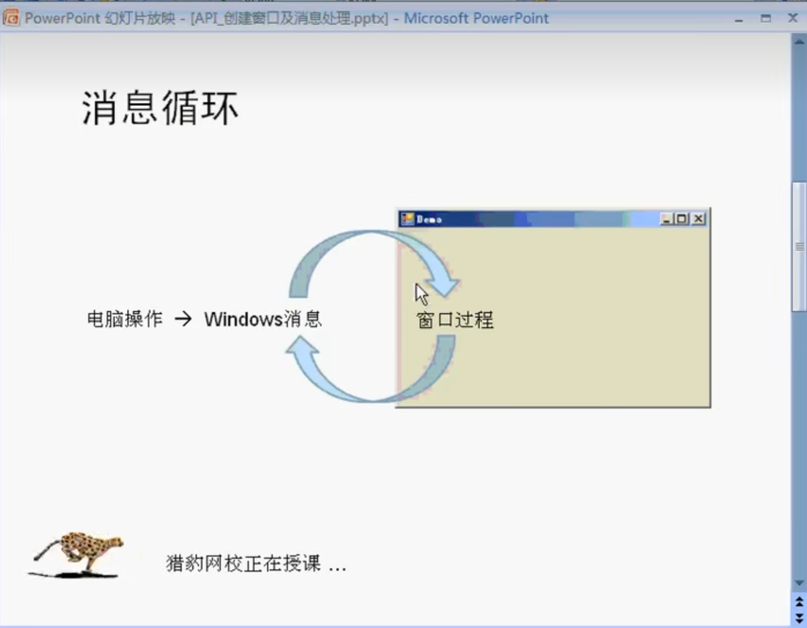
基本原理
先看窗口：
typedef struct tagWNDCLASSEXW {
UINT cbSize;
/* Win 3.x */
UINT style;
WNDPROC lpfnWndProc;
int cbClsExtra;
int cbWndExtra;
HINSTANCE hInstance;
HICON hIcon;
HCURSOR hCursor;
HBRUSH hbrBackground;
LPCWSTR lpszMenuName;
LPCWSTR lpszClassName;
/* Win 4.0 */
HICON hIconSm;
} WNDCLASSEXW, *PWNDCLASSEXW, NEAR *NPWNDCLASSEXW, FAR *LPWNDCLASSEXW;#include<Windows.h>
#include<tchar.h>
HWND hwnd;
HINSTANCE hInst;
LRESULT CALLBACK MainWndProc(HWND hwnd, UINT uMsg, WPARAM wParam, LPARAM lParam);
int WINAPI WinMain(HINSTANCE hInstance, HINSTANCE hPrevInstance, LPSTR lpCmdLine, int nCmdShow) {
//窗口
WNDCLASSEX wcx;
//消息
MSG msg;
BOOL fGotMsg;
wcx.cbSize = sizeof(wcx);
wcx.style = CS_HREDRAW | CS_VREDRAW; // 发生大小改变时再次绘制窗口
wcx.lpszClassName = L"MainWndProc";
wcx.lpfnWndProc = MainWndProc;
wcx.cbClsExtra = 0;// 不使用额外内存
wcx.cbWndExtra = 0;
wcx.hInstance = hInstance;
wcx.hIcon = LoadIcon(NULL,IDI_APPLICATION);
wcx.hCursor = LoadCursor(NULL, IDC_ARROW);
wcx.hbrBackground = (HBRUSH)GetStockObject(WHITE_BRUSH);
wcx.lpszMenuName = NULL;
wcx.hIconSm = (HICON)LoadImage(hInstance,
MAKEINTRESOURCE(5),
IMAGE_ICON,
GetSystemMetrics(SM_CXSMICON),
GetSystemMetrics(SM_CXSMICON),
LR_DEFAULTCOLOR
);
// 注册！在创建
if (!RegisterClassEx(&wcx)) {
return -1;
}
TCHAR h1[] = L"hello";
TCHAR h2[] = L"hello";
hwnd = CreateWindowEx(0, h1, h2, WS_OVERLAPPEDWINDOW, CW_USEDEFAULT, \
CW_USEDEFAULT, 300, 180, NULL, NULL, hInstance, NULL);
if (!hwnd) {
return GetLastError();
}
ShowWindow(hwnd, nCmdShow);
UpdateWindow(hwnd);//提升优先级到最先
// 消息队列取消息
while ((fGotMsg = GetMessage(&msg, (HWND)NULL, 0, 0))!=0) {
TranslateMessage(&msg); // 一些消息需要翻译
DispatchMessage(&msg); //转发消息给窗口过程
}
return msg.wParam;
}
//
LRESULT CALLBACK MainWndProc(HWND hwnd, UINT uMsg, WPARAM wParam, LPARAM lParam)
{
switch (uMsg) {
case WM_DESTROY:
PostQuitMessage(0); // 退出线程
return 0;
case WM_LBUTTONDOWN:
MessageBox(hwnd, L"hello", L"hello", MB_OK);
return 0;
default:
return DefWindowProc(hwnd, uMsg, wParam, lParam);
}
}在QT中，我们已经看到了生成一个对话框是容易的——但是现在，让我们把目光聚焦在基于Windows API的MFC下如何召唤一个对话框。
跟QT类似的——我们找到资源文件 》添加新建项 》 对话框，添加即可。
我们随后设计也界面

随便整点。
现在看看你的resource.h，多了四个宏：
//{{NO_DEPENDENCIES}}
// Microsoft Visual C++ 生成的包含文件。
// 供 Project2.rc 使用
//
#define IDD_DIALOG1 101
#define IDC_BUTTON1 1001
#define IDC_BUTTON2 1002
#define IDC_BUTTON3 1003 他们是我们操作之的接口。
下面开始写主函数的代码：
int APIENTRY WinMain(_In_ HINSTANCE hInstance,
_In_opt_ HINSTANCE hPrevInstance,
_In_ LPSTR lpCmdLine,
_In_ int nShowCmd)
{
DialogBox(hInstance, MAKEINTRESOURCE(IDD_DIALOG1), NULL, MainDlgProc);
}APIEntry:
APIENTRY 系统函数的调用约定。
此类型在 WinDef.h 中声明，如下所示：
#define APIENTRY WINAPI 也就是说，它本质上时WINAPI的重定义与重命名。
DialogBox
从对话框模板资源创建模式对话框。 在指定的回调函数通过调用 EndDialog 函数终止模式对话框之前，DialogBox 不会返回控件。
语法
void DialogBoxA(
[in, optional] hInstance,
[in] lpTemplate,
[in, optional] hWndParent,
[in, optional] lpDialogFunc
);参数
[in, optional] hInstance类型： HINSTANCE
包含对话框模板的模块的句柄。 如果此参数为 NULL，则使用当前可执行文件。
[in] lpTemplate类型： LPCTSTR
对话框模板。 此参数是指向指定对话框模板名称的以空字符结尾的字符串的指针，或者是指定对话框模板的资源标识符的整数值。 如果参数指定了资源标识符，则其高位字必须为零，其低位字必须包含该标识符。 你可以使用 MAKEINTRESOURCE 宏来创建此值。
[in, optional] hWndParent类型：HWND
拥有对话框的窗口的句柄。
[in, optional] lpDialogFunc类型： DLGPROC
指向对话框过程的指针。 有关对话框过程的详细信息，请参阅 DialogProc。
备注
DialogBox 宏使用 CreateWindowEx 函数创建对话框。 然后，如果模板指定对话框过程DS_SETFONT或DS_SHELLFONT样式) ，则 DialogBox 会发送WM_INITDIALOG消息 (和WM_SETFONT消息。 该函数显示对话框 (，无论模板是否指定 WS_VISIBLE 样式) ，禁用所有者窗口，并启动其自己的消息循环来检索和调度对话框的消息。
当对话框过程调用 EndDialog 函数时，DialogBox 将销毁对话框，结束消息循环，如果以前启用) ，则启用所有者窗口 (，并在调用 EndDialog 时返回对话框过程指定的 nResult 参数。
MAKEINTERSOURCE
VC的定义是(winuser.h):
#define MAKEINTRESOURCEA(i) ([LPSTR](https://baike.baidu.com/item/LPSTR/9782867?fromModule=lemma_inlink))((ULONG_PTR)((WORD)(i)))
#define MAKEINTRESOURCEW(i) (LPWSTR)((ULONG_PTR)((WORD)(i)))
#define MAKEINTRESOURCE MAKEINTRESOURCEW
#else
#define MAKEINTRESOURCE MAKEINTRESOURCEA
[#endif](https://baike.baidu.com/item/%23endif/2834688?fromModule=lemma_inlink) // 用这个宏的主要原因是有的资源是用序号定义的,而不是字符串.所以要把数字转换成字符串指针,然后再传递给LoadResource之类的函数,这样才加载了资源.
要释放资源(用LoadResource加载的)可以调用FreeResource函数把LoadResource返回的指针传递给FreeResource.
作用
是把一个”数字形ID”,转化为”字符串”.但是执行前后,输入的数据的内容和长度是不变的!它只不过就是C语言里面”强制类型转换“而已.
请看 Winuser.h 代码:
#define MAKEINTRESOURCEA(i) ([LPSTR](https://baike.baidu.com/item/LPSTR/9782867?fromModule=lemma_inlink))(([DWORD](https://baike.baidu.com/item/DWORD/5043783?fromModule=lemma_inlink))((WORD)(i)))
#define MAKEINTRESOURCEW(i) (LPWSTR)((DWORD)((WORD)(i)))
#define MAKEINTRESOURCE MAKEINTRESOURCEW
#else
#define MAKEINTRESOURCE MAKEINTRESOURCEA
[#endif](https://baike.baidu.com/item/%23endif/2834688?fromModule=lemma_inlink) // 的用法.就用FindResource来说明.
HRSRC FindResource(
HMODULE hModule, // module handle
LPCTSTR lpName, // resource name
LPCTSTR lpType // resource type
); 就是lpName参数需要使用MAKEINTRESOURCE ,因为它需要LPCTSTR类型的参数输入.那么,情况就很清楚了.凡涉及”资源”的API或者MFC类,在参数类型为LPCTSTR时,就应该使用 MAKEINTRESOURCE.这是针对”资源名字”为”数字类型”时的情况.
#include<iostream>
#include<Windows.h>
#include"resource.h"
INT_PTR CALLBACK MainDlgProc(HWND hDlg, UINT uMsg, WPARAM wParam, LPARAM lParam) {
BOOL bRet = TRUE;
int usrChoice;
switch (uMsg)
{
case WM_LBUTTONDOWN:
MessageBox(hDlg, L"Hello!", L"A Greeting", MB_OK);
case WM_COMMAND:
switch (LOWORD(wParam)) {
case IDC_BUTTON1:
usrChoice = MessageBox(hDlg, L"I convinced that you push the button1", L"A greeting", MB_OK);
if (usrChoice == MB_OK) {
bRet = FALSE;
break;
}
break;
case IDC_BUTTON2:
usrChoice = MessageBox(hDlg, L"I convinced that you push the button2", L"A greeting", MB_OK);
if (usrChoice == MB_OK) {
bRet = FALSE;
break;
}
break;
case IDC_BUTTON3:
EndDialog(hDlg, 0);
bRet = FALSE;
break;
default:
bRet = FALSE;
break;
}
break;
default:
bRet = FALSE;
break;
}
return bRet;
}
int APIENTRY WinMain(_In_ HINSTANCE hInstance,
_In_opt_ HINSTANCE hPrevInstance,
_In_ LPSTR lpCmdLine,
_In_ int nShowCmd)
{
DialogBox(hInstance, MAKEINTRESOURCE(IDD_DIALOG1), NULL, MainDlgProc);
} 这个demo生成一个有趣的对话框，可以试试看。
下面专门讲授wchar_t，他是宽字符的意思。
因为我们需要大量的输出中文，为了适配，我们常常使用wchar_t
#include<stdio.h>
int main() {
char c = 'A'; // 此类型在默认下只可以保存一个字节
wchar_t c2 = L'牛'; // 现在就可以存下了。
} 但是这样还是会不认识，原因在于。。。
#include<stdio.h>
#include<stdlib.h>
#include<locale.h>
int main() {
setlocale(LC_ALL, ""); // 设置windows本地的编码
char c = 'A'; // 此类型在默认下只可以保存一个字节
wchar_t c2 = L'牛'; // 现在就可以存下了。
wprintf(L"%c", c2);
}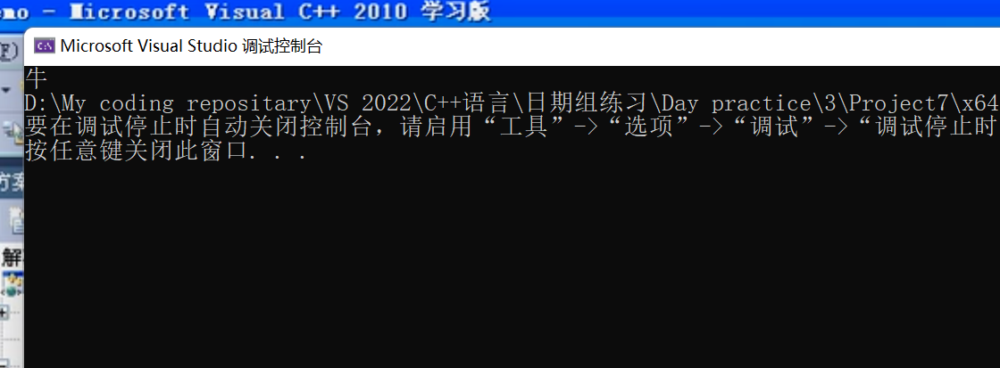
那如何查看当前的地域呢？
printf("%s\n", setlocale(LC_ALL, NULL));
setlocale(LC_ALL, "");
printf("%s\n", setlocale(LC_ALL, NULL));
对于宽字符，我们有跟char一样配饰的各式各样的函数。这里不再做什么介绍了！
三大版本的char类型
在微软中，有三大类型——CHAR , WCHAR, TCHAR（ASCII，Unicode和通用版本）
随后还有字符串版本的PSTR PWSTR, PTSTR, PC(onst)STR PCWSTR, PCTSTR…
#include<Windows.h>
int WINAPI WinMain(
_In_ HINSTANCE hInstance,
_In_opt_ HINSTANCE hPrevInstance,
_In_ LPSTR lpCmdLine,
_In_ int nShowCmd
)
{
CHAR a = 'a';
WCHAR b = 'b';
TCHAR c = 'c';
} 看到TCHAR是根据平台的字符集选择而发生变动！建议我们的编程使用Unicode字符集。
字符转换
下面来看字符转换——将多字节字符和宽字符。为了使得转换方便，我们需要使用：
MultiByteToWideChar();
这个函数将字符串映射到 UTF-16 (宽字符) 字符串。 字符串不一定来自多字节字符集。
注意！错误地使用 MultiByteToWideChar 函数可能会损害应用程序的安全性。 调用此函数很容易导致缓冲区溢出，因为 lpMultiByteStr 指示的输入缓冲区的大小等于字符串中的字节数，而 lpWideCharStr 指示的输出缓冲区的大小等于字符数。 为了避免缓冲区溢出，应用程序必须指定适合缓冲区接收的数据类型的缓冲区大小。
ANSI 代码页在不同计算机上可能不同，也可以更改单个计算机，从而导致数据损坏。 为了获得最一致的结果，应用程序应使用 Unicode（如 UTF-8 或 UTF-16），而不是特定代码页，除非旧标准或数据格式阻止使用 Unicode。 如果无法使用 Unicode，应用程序应在协议允许时使用适当的编码名称标记数据流。 HTML 和 XML 文件允许标记，但文本文件不会。
语法
int MultiByteToWideChar(
[in] UINT CodePage,
[in] DWORD dwFlags,
[in] _In_NLS_string_(cbMultiByte)LPCCH lpMultiByteStr,
[in] int cbMultiByte,
[out, optional] LPWSTR lpWideCharStr,
[in] int cchWideChar
);参数
[in] CodePage 用于执行转换的代码页。 此参数可以设置为在操作系统中安装或可用的任何代码页的值。 有关代码页的列表，请参阅 代码页标识符。 应用程序还可以指定下表中显示的值之一。
| Value | 含义 |
|---|---|
| CP_ACP | 系统默认的 Windows ANSI 代码页。注意 此值在不同计算机上可能不同，即使在同一网络上也是如此。 它可以在同一台计算机上更改，从而导致存储的数据变得不可恢复损坏。 此值仅用于临时使用，永久存储应尽可能使用 UTF-16 或 UTF-8。 |
| CP_MACCP | 当前系统 Macintosh 代码页。注意 此值在不同计算机上可能不同，即使在同一网络上也是如此。 它可以在同一台计算机上更改，从而导致存储的数据变得不可恢复损坏。 此值仅用于临时使用，永久存储应尽可能使用 UTF-16 或 UTF-8。 注意 此值主要用于旧代码，通常不需要，因为新式 Macintosh 计算机使用 Unicode 进行编码。 |
| CP_OEMCP | 当前系统 OEM 代码页。注意 此值在不同计算机上可能不同，即使在同一网络上也是如此。 它可以在同一台计算机上更改，从而导致存储的数据变得不可恢复损坏。 此值仅用于临时使用，永久存储应尽可能使用 UTF-16 或 UTF-8。 |
| CP_SYMBOL | 符号代码页 (42) 。 |
| CP_THREAD_ACP | 当前线程的 Windows ANSI 代码页。注意 此值在不同计算机上可能不同，即使在同一网络上也是如此。 它可以在同一台计算机上更改，从而导致存储的数据变得不可恢复损坏。 此值仅用于临时使用，永久存储应尽可能使用 UTF-16 或 UTF-8。 |
| CP_UTF7 | UTF-7。 仅当 7 位传输机制强制使用此值。 首选使用 UTF-8。 |
| CP_UTF8 | UTF-8。 |
[in] dwFlags 指示转换类型的标志。 应用程序可以指定以下值的组合，MB_PRECOMPOSED为默认值。 MB_PRECOMPOSED和MB_COMPOSITE互斥。 无论其他标志的状态如何，都可以设置MB_USEGLYPHCHARS和MB_ERR_INVALID_CHARS。
| Value | 含义 |
|---|---|
| MB_COMPOSITE | 始终使用分解字符，即基字符和一个或多个非分步字符各具有不同的代码点值。 例如，Ä 由 A + ー 表示：拉丁文大写字母 A (U+0041) + 组合 DIAERESIS (U+0308) 。 请注意，此标志不能与MB_PRECOMPOSED一起使用。 |
| MB_ERR_INVALID_CHARS | 如果遇到无效的输入字符，则失败。从 Windows Vista 开始，如果应用程序未设置此标志，函数不会删除非法代码点，而是将非法序列替换为根据指定的代码页) 编码的 U+FFFD (。Windows 2000 SP4 及更高版本，Windows XP： 如果未设置此标志，函数将无提示删除非法代码点。 对 GetLastError 的调用返回ERROR_NO_UNICODE_TRANSLATION。 |
| MB_PRECOMPOSED | 默认;请勿与MB_COMPOSITE一起使用。 始终使用预编译字符，即具有基字符或非加速度字符组合的单个字符值。 例如，在字符 è 中，e 是基字符，重音符严重标记是非节奏字符。 如果为字符定义了单个 Unicode 码位，则应用程序应使用它而不是单独的基字符和非节奏字符。 例如，Ä 由单一 Unicode 码位 LATIN 大写字母 A WITH DIAERESIS (U+00C4) 表示。 |
| MB_USEGLYPHCHARS | 使用字形字符而不是控制字符。 |
对于下面列出的代码页， dwFlags 必须设置为 0。 否则，函数将失败并ERROR_INVALID_FLAGS。50220，50221，50222，50225，50227，，50229，57002 到 57011，65000 (UTF-7)，42 (符号)
对于 UTF-8 或代码页 54936 (GB18030，从 Windows Vista) 开始， dwFlags 必须设置为 0 或MB_ERR_INVALID_CHARS。 否则，函数将失败并ERROR_INVALID_FLAGS。
[in] lpMultiByteStr 指向要转换的字符串的指针。
[in] cbMultiByte lpMultiByteStr 参数指示的字符串的大小（以字节为单位）。 或者，如果字符串以 null 结尾，则可以将此参数设置为 -1。 请注意，如果 cbMultiByte 为 0，函数将失败。
如果此参数为 -1，则该函数将处理整个输入字符串，包括终止 null 字符。 因此，生成的 Unicode 字符串具有终止 null 字符，函数返回的长度包括此字符。
如果此参数设置为正整数，则函数将完全处理指定的字节数。 如果提供的大小不包括终止 null 字符，则生成的 Unicode 字符串不会以 null 结尾，并且返回的长度不包括此字符。
[out, optional] lpWideCharStr 指向接收转换后的字符串的缓冲区的指针。
[in] cchWideChar lpWideCharStr 指示的缓冲区的大小（以字符为单位）。 如果此值为 0，则该函数将返回所需的缓冲区大小（以字符为单位，包括任何终止 null 字符）并且不使用 lpWideCharStr 缓冲区。
返回值
返回写入缓冲区的字符数，如果成功，则返回 由 lpWideCharStr 指示的字符数。 如果函数成功且 cchWideChar 为 0，则返回值是 lpWideCharStr 指示的缓冲区所需的大小（以字符为单位）。 另请参阅 dwFlags ，了解输入无效序列时MB_ERR_INVALID_CHARS标志如何影响返回值的信息。
如果函数不成功，则返回 0。 若要获取扩展的错误信息，应用程序可以调用 GetLastError，后者可以返回以下错误代码之一：
- ERROR_INSUFFICIENT_BUFFER。 提供的缓冲区大小不够大，或者错误地设置为 NULL。
- ERROR_INVALID_FLAGS。 为标志提供的值无效。
- ERROR_INVALID_PARAMETER。 任何参数值都无效。
- ERROR_NO_UNICODE_TRANSLATION。 在字符串中找到无效的 Unicode。
注解
此函数的默认行为是转换为输入字符串的预编译形式。 如果预编译的窗体不存在，该函数将尝试转换为复合窗体。
使用MB_PRECOMPOSED标志对大多数代码页的影响很小，因为大多数输入数据已经组成。 考虑使用 MultiByteToWideChar 进行转换后调用 NormalizeString。 NormalizeString 提供更准确、标准和一致的数据，还可以更快。 请注意，对于传递给 NormalizeString的NORM_FORM枚举，NormalizationC 对应于MB_PRECOMPOSED，NormalizationD 对应于MB_COMPOSITE。
如上述警告中所述，如果未首先使用 cchWideChar 设置为 0 调用此函数，则输出缓冲区很容易溢出，以获取所需的大小。 如果使用MB_COMPOSITE标志，则每个输入字符的输出长度可以为三个或多个字符。
lpMultiByteStr 和 lpWideCharStr 指针不能相同。 如果它们相同，函数将失败， GetLastError 返回值ERROR_INVALID_PARAMETER。
如果显式指定输入字符串长度而不终止 null 字符，则 MultiByteToWideChar 不会终止输出字符串。 若要为此函数终止输出字符串，应用程序应传入 -1 或显式计算输入字符串的终止 null 字符。
如果设置了MB_ERR_INVALID_CHARS并且源字符串中遇到无效字符，则函数将失败。 无效字符为下列字符之一：
- 不是源字符串中默认字符的字符，但在未设置MB_ERR_INVALID_CHARS时转换为默认字符
- 对于 DBCS 字符串，具有前导字节但没有有效尾随字节的字符
从 Windows Vista 开始，此函数完全符合 UTF-8 和 UTF-16 的 Unicode 4.1 规范。 在早期操作系统上使用的函数编码或解码孤独 代理项半 部分或不匹配的代理项对。 在早期版本的 Windows 中编写的代码，这些代码依赖于此行为对随机非文本二进制数据进行编码可能会遇到问题。 但是，在有效的 UTF-8 字符串上使用此函数的代码的行为方式与早期 Windows 操作系统相同。
Windowsxp： 为了防止 UTF-8 字符的非最短格式版本的安全问题， MultiByteToWideChar 会删除这些字符。
从 Windows 8 开始：MultiByteToWideChar 在 Stringapiset.h 中声明。 在Windows 8之前，它在 Winnls.h 中声明。
代码示例
catch (std::exception e)
{
// Save in-memory logging buffer to a log file on error.
::std::wstring wideWhat;
if (e.what() != nullptr)
{
int convertResult = MultiByteToWideChar(CP_UTF8, 0, e.what(), (int)strlen(e.what()), NULL, 0);
if (convertResult <= 0)
{
wideWhat = L"Exception occurred: Failure to convert its message text using MultiByteToWideChar: convertResult=";
wideWhat += convertResult.ToString()->Data();
wideWhat += L" GetLastError()=";
wideWhat += GetLastError().ToString()->Data();
}
else
{
wideWhat.resize(convertResult + 10);
convertResult = MultiByteToWideChar(CP_UTF8, 0, e.what(), (int)strlen(e.what()), &wideWhat[0], (int)wideWhat.size());
if (convertResult <= 0)
{
wideWhat = L"Exception occurred: Failure to convert its message text using MultiByteToWideChar: convertResult=";
wideWhat += convertResult.ToString()->Data();
wideWhat += L" GetLastError()=";
wideWhat += GetLastError().ToString()->Data();
}
else
{
wideWhat.insert(0, L"Exception occurred: ");
}
}
}
else
{
wideWhat = L"Exception occurred: Unknown.";
}
Platform::String^ errorMessage = ref new Platform::String(wideWhat.c_str());
// The session added the channel at level Warning. Log the message at
// level Error which is above (more critical than) Warning, which
// means it will actually get logged.
_channel->LogMessage(errorMessage, LoggingLevel::Error);
SaveLogInMemoryToFileAsync().then([=](StorageFile^ logFile) {
_logFileGeneratedCount++;
StatusChanged(this, ref new LoggingScenarioEventArgs(LoggingScenarioEventType::LogFileGenerated, logFile->Path->Data()));
}).wait();
}WideCharToMultiByte
传送门：函数WideCharToMultiByte（） 详解 - vranger - 博客园 (cnblogs.com)
函数声明
int WideCharToMultiByte(
UINT CodePage,
DWORD dwFlags,
LPWSTR lpWideCharStr,
int cchWideChar,
LPCSTR lpMultiByteStr,
int cchMultiByte,
LPCSTR lpDefaultChar,
PBOOL pfUsedDefaultChar
); 函数功能：
此函数把宽字符串转换成指定的新的字符串，如ANSI，UTF8等，新字符串不必是多字节字符集。
(—-Unicode 转 ANSI(GB2312)，UTF8)
参数：
- CodePage：指定执行转换的代码页，这个参数可以为系统已安装或有效的任何代码页所给定的值。
你也可以指定其为下面的任意一值：
(我想最常用的应该是CP_ACP和CP_UTF8了，前者将宽字符转 换为ANSI，后者转换为UTF8。 )
| CP_ACP | 当前系统ANSI代码页 |
|---|---|
| CP_MACCP | 当前系统Macintosh代码页 |
| CP_OEMCP | 当前系统OEM代码页，一种原始设备制造商硬件扫描码 |
| CP_SYMBOL | 符号代码页（42） |
| CP_THREAD_ACP | 当前线程ANSI代码页 |
- dwFlags：指定如何处理没有转换的字符，但不设此参数函数会运行的更快一些，我都是把它设为0。
可设的值如下表所示：
WC_NO_BEST_FIT_CHARS
把不能直接转换成相应多字节字符的Unicode字符转换成lpDefaultChar指定的默认字符。也就是说，如果把Unicode转换成多字节字符，然后再转换回来，你并不一定得到相同的Unicode字符，因为这期间可能使用了默认字符。此选项可以单独使用，也可以和其他选项一起使用。
WC_COMPOSITECHECK
把合成字符转换成预制的字符。它可以与后三个选项中的任何一个组合使用，如果没有与他们中的任何一个组合，则与选项WC_SEPCHARS相同。
WC_ERR_INVALID_CHARS
此选项会致使函数遇到无效字符时失败返回，并且GetLastError会返回错误码ERROR_NO_UNICODE_TRANSLATION。否则函数会自动丢弃非法字符。此选项只能用于UTF8。
WC_DISCARDNS
转换时丢弃不占空间的字符，与WC_COMPOSITECHECK 一起使用
WC_SEPCHARS
转换时产生单独的字符，此是默认转换选项，WC_COMPOSITECHECK一起使用
WC_DEFAULTCHAR
转换时使用默认字符代替例外的字符，(最常见的如’?’)，与WC_COMPOSITECHECK一起使用。 注意：当指定WC_COMPOSITECHECK时，函数会将合成字符转换成预制字符。合成字符由一个基字符和一个不占空间的字符(如欧洲国家及汉语拼音的音标)组成，
每一个都有不同的字符值。预制字符有一个用于表示基字符和不占空间字符的合成体的单一的字符值。
当指定WC_COMPOSITECHECK选项时，也可以使用上表列出的最后3个选项来定制预制字符的转换规则。这些选项决定了函数在遇到宽字符串的合成字符没有对
应的预制字符时的行为，他们与WC_COMPOSITECHECK一起使用，如果都没有指定，函数默认WC_SEPCHARS。
对于下列代码页，dwFlags必须为0，否则函数返回错误码ERROR_INVALID_FLAGS。
50220 50221 50222 50225 50227 50229 52936 54936 57002到57011 65000(UTF7) 42(Symbol)
对于UTF8，dwFlags必须为0或WC_ERR_INVALID_CHARS，否则函数都将失败返回并设置错误码ERROR_INVALID_FLAGS，你可以调用GetLastError获得。
- lpWideCharStr： 待转换的宽字符串。
- cchWideChar： 待转换宽字符串的长度，-1表示转换到字符串结尾。
- lpMultiByteStr： 接收转换后输出新串的缓冲区。
- cbMultiByte：输出缓冲区大小，如果为0，lpMultiByteStr将被忽略，函数将返回所需缓冲区大小而不使用lpMultiByteStr。
- lpDefaultChar： 指向字符的指针， 在指定编码里找不到相应字符时使用此字符作为默认字符代替。如果为NULL则使用系统默认字符。对于要求此参数为NULL的dwFlags而使用此参数，函数将失败返回并设置错误码ERROR_INVALID_PARAMETER。
- lpUsedDefaultChar：开关变量的指针，用以表明是否使用过默认字符。对于要求此参数为NULL的dwFlags而使用此参数，函数将失败返回并设置错误码ERROR_INVALID_PARAMETER。lpDefaultChar和lpUsedDefaultChar都设为NULL，函数会更快一些。
- 返回值：如果函数成功，且cbMultiByte非0，返回写入lpMultiByteStr的字节数(包括字符串结尾的null)；cbMultiByte为0，则返回转换所需字节数。函数失败，返回0。
注意：函数WideCharToMultiByte使用不当，会给影响程序的安全。调用此函数会很容易导致内存泄漏，因为lpWideCharStr指向的输入缓冲区大小是宽字符数，而lpMultiByteStr指向的输出缓冲区大小是字节数。为了避免内存泄漏，应确保为输出缓冲区指定合适的大小。我的方法是先使cbMultiByte为0调用WideCharToMultiByte一次以获得所需缓冲区大小，为缓冲区分配空间，然后再次调用WideCharToMultiByte填充缓冲区，详见下面的代码。另外，从Unicode UTF16向非Unicode字符集转换可能会导致数据丢失，因为该字符集可能无法找到表示特定Unicode数据的字符。
范例
wchar_t* pwszUnicode = L"Holle, word! 你好，中国！ ";
int iSize;
char* pszMultiByte;
iSize = WideCharToMultiByte(CP_ACP, 0, pwszUnicode, -1, NULL, 0, NULL, NULL);
pszMultiByte = (char*)malloc(iSize*sizeof(char));
WideCharToMultiByte(CP_ACP, 0, pwszUnicode, -1, pszMultiByte, iSize, NULL, NULL);#include<stdio.h>
#include<Windows.h>
#include<locale.h>
int main() {
DWORD dwNum = 0;
setlocale(LC_ALL, "");
char sText[] = "多字节转换为宽字符";
// 问题来了，我们给多少空间呢？
/*1. from ASCII 2. a control flag, we usually have no need of that3.what str 4. transform ALL 5.to where(here we don't want to get result), final: tha space that contain*/
dwNum = MultiByteToWideChar(CP_ACP, 0, sText, -1, NULL, 0);
WCHAR* pwText = (WCHAR)malloc(sizeof(WCHAR) * dwNum*2);
if (pwText == NULL) {
free(pwText);
return 1;
}
MultiByteToWideChar(CP_ACP, 0, sText, -1, pwText, dwNum);
wprintf(L"M->W:%s", pwText);遍历卷 GetLogicalDriveStrings
一个卷也叫做逻辑驱动器，或者叫盘！这是一个基本的概念。
注意到它一次性返回的是若干的字字符串：

#include<Windows.h>
#include<stdio.h>
#include<stdlib.h>
#define BFSIZE 1024
int main()
{
WCHAR szLogicalDriveString[BFSIZE];
PWCHAR szDrive;
ZeroMemory(szLogicalDriveString, BFSIZE);//清空内存
szDrive = szLogicalDriveString;
GetLogicalDriveStrings(BFSIZE - 1, szLogicalDriveString);
do {
printf("%s\n", szDrive);
szDrive += (lstrlen(szDrive)+1);
} while (*szDrive != '\0');
}查看第一个卷
我们可以使用FindFirstVolume这个函数的设备名称
TCHAR buf[BFSIZE];
HANDLE hVol;
BOOL bFlag; // as to see if the function work well
hVol = FindFirstVolume(buf, BFSIZE);
if (hVol == INVALID_HANDLE_VALUE) {
wprintf(TEXT("NO... Volumn has't been find!"));
return -1;
}
printf("%ls\n", buf);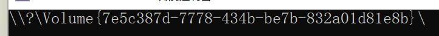
这是驱动设备的真正名称，他是唯一的标识符。
使用FindNextVolume来找到下一个：
TCHAR buf[BFSIZE];
HANDLE hVol;
BOOL bFlag; // as to see if the function work well
hVol = FindFirstVolume(buf, BFSIZE);
if (hVol == INVALID_HANDLE_VALUE) {
wprintf(TEXT("NO... Volumn has't been find!"));
return -1;
}
printf("%ls\n", buf);
while (FindNextVolume(hVol, buf, BFSIZE)) {
printf("%ls\n", buf);
}
bFlag = FindVolumeClose(hVol);
return bFlag;
Extensive Reading for Microsoft API
ZeroMemory 宏 (wdm.h)
ZeroMemory 例程使用零填充内存块，给定指向块的指针和要填充的长度（以字节为单位）。
语法
void RtlZeroMemory(
void* Destination,
size_t Length
);参数
[out] Destination指向要用零填充的内存块的指针。
[in] Length要用零填充的字节数。
返回值
无
备注
若要将内存缓冲区归零以擦除安全敏感数据，请改用SecureZeroMemory
如果目标内存块位于非分页系统内存中， ZeroMemory 的调用方可以在任何 IRQL 上运行。 否则，调用方必须在 IRQL <= APC_LEVEL 运行。
本质上
memset((Destination),0,(Length))getLogicalDriveStrings函数 (fileapi.h)
用指定系统中有效驱动器的字符串填充缓冲区。
语法
DWORD GetLogicalDriveStrings(
[in] DWORD nBufferLength,
[out] LPWSTR lpBuffer
);参数
[in] nBufferLength TCHAR 中由 lpBuffer 指向的缓冲区的最大大小。 此大小不包括终止 null 字符。 如果此参数为零，则不使用 lpBuffer 。
[out] lpBuffer 指向一个缓冲区的指针，该缓冲区接收一系列以 null 结尾的字符串，一个用于系统中每个有效驱动器，另外还有一个 null 字符。 每个字符串都是设备名称。
返回值
如果函数成功，则返回值是复制到缓冲区的字符串的长度（以字符为单位），不包括终止 null 字符。 请注意，ANSI-ASCII null 字符使用一个字节，但 Unicode (UTF-16) null 字符使用两个字节。
如果缓冲区不够大，则返回值大于 nBufferLength。 它是保存驱动器字符串所需的缓冲区大小。
如果函数失败，则返回值为零。 若要获取扩展的错误信息，请使用 GetLastError 函数。
注解
无论需要根目录（例如 GetDriveType 和 GetDiskFreeSpace 函数），缓冲区中的每个字符串都可以使用。
此函数返回全局和本地 MS-DOS 设备命名空间中的驱动器串联。 如果这两个命名空间中都存在驱动器，此函数将返回本地 MS-DOS 设备命名空间中的条目。 有关详细信息，请参阅 定义 MS DOS 设备名称。
在Windows 8和Windows Server 2012中，以下技术支持此函数。
| 技术 | 支持 |
|---|---|
| 服务器消息块 (SMB) 3.0 协议 | 否 |
| SMB 3.0 透明故障转移 (TFO) | 否 |
| 具有横向扩展文件共享的 SMB 3.0 (SO) | 否 |
| 群集共享卷文件系统 (CsvFS) | 是 |
| 弹性文件系统 (ReFS) | 是 |
SMB 不支持卷管理功能。
FindFirstVolume 函数 (fileapi.h)
检索计算机上的卷的名称。 FindFirstVolume 用于开始扫描计算机的卷。
语法
HANDLE FindFirstVolume(
[out] LPWSTR lpszVolumeName,
[in] DWORD cchBufferLength
);参数
[out] lpszVolumeName 指向接收空终止字符串的缓冲区的指针，该字符串指定找到的第一个卷的卷 GUID 路径。
[in] cchBufferLength 要在 TCHAR 中接收卷 GUID 路径的缓冲区的长度。
返回值
如果函数成功，则返回值是随后调用 FindNextVolume 和 FindVolumeClose 函数时使用的搜索句柄。
如果函数找不到任何卷，则返回值为 INVALID_HANDLE_VALUE 错误代码。 要获得更多的错误信息，请调用 GetLastError。
注解
FindFirstVolume 函数打开卷搜索句柄，并返回有关计算机上找到的第一个卷的信息。 建立搜索句柄后，可以使用 FindNextVolume 函数搜索其他卷。 不再需要搜索句柄时，请使用 FindVolumeClose 函数将其关闭。
不应假定这些函数返回的卷的顺序与计算机上的卷顺序之间存在任何关联。 具体而言，如果) 或磁盘管理员，则不要假定由 BIOS (分配的卷顺序和驱动器号之间的任何关联。
在Windows 8和Windows Server 2012中，以下技术支持此函数。
| 技术 | 支持 |
|---|---|
| 服务器消息块 (SMB) 3.0 协议 | 否 |
| SMB 3.0 透明故障转移 (TFO) | 否 |
| 具有横向扩展文件共享的 SMB 3.0 (SO) | 否 |
| 群集共享卷文件系统 (CsvFS) | 是 |
| 弹性文件系统 (ReFS) | 是 |
SMB 不支持卷管理功能。
FindNextVolume 函数 (fileapi.h)
继续通过调用 FindFirstVolume 函数开始的卷搜索。 FindNextVolume 为每个调用查找一个卷。
语法
BOOL FindNextVolume(
[in] HANDLE hFindVolume,
[out] LPWSTR lpszVolumeName,
[in] DWORD cchBufferLength
);参数
[in] hFindVolume 上一次调用 FindFirstVolume 函数返回的卷搜索句柄。
[out] lpszVolumeName 指向接收找到的卷 GUID 路径的字符串的指针。
[in] cchBufferLength 接收卷 GUID 路径的缓冲区的长度（以 TCHAR 为单位）。
返回值
如果该函数成功，则返回值为非零值。
如果函数失败，则返回值为零。 要获得更多的错误信息，请调用 GetLastError。 如果未找到匹配的文件， GetLastError 函数将返回 ERROR_NO_MORE_FILES 错误代码。 在这种情况下，请使用 FindVolumeClose 函数关闭搜索。
注解
通过调用 FindFirstVolume 建立搜索句柄后，可以使用 FindNextVolume 函数搜索其他卷。
不应假定这些函数返回的卷的顺序与计算机上的卷顺序之间存在任何关联。 具体而言，如果存在任何) 或磁盘管理员，则不要假定 BIOS (分配的卷顺序和驱动器号之间的任何关联。
在Windows 8和Windows Server 2012中，以下技术支持此函数。
| 技术 | 支持 |
|---|---|
| 服务器消息块 (SMB) 3.0 协议 | 否 |
| SMB 3.0 透明故障转移 (TFO) | 否 |
| 具有横向扩展文件共享的 SMB 3.0 (SO) | 否 |
| 群集共享卷文件系统 (CsvFS) | 是 |
| 弹性文件系统 (ReFS) | 是 |
SMB 不支持卷管理功能。
查看驱动器属性 GetDriverType && GetVolumeInformation
我们在盘上右键查看属性。
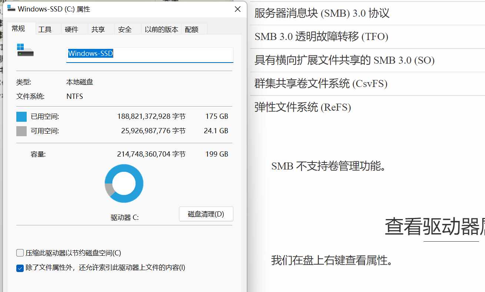
#include<Windows.h>
#include<stdio.h>
BOOL GetDriverInfo(LPSTR szDriver) {
UINT uDriverType = GetDriveType(szDriver);
printf("%u", uDriverType);
return TRUE;
}
int main()
{
GetDriverInfo(TEXT("c:\\"));
}
有自己的特殊含义！在WinBase.h文件下

#define DRIVE_UNKNOWN 0
#define DRIVE_NO_ROOT_DIR 1
#define DRIVE_REMOVABLE 2
#define DRIVE_FIXED 3
#define DRIVE_REMOTE 4
#define DRIVE_CDROM 5
#define DRIVE_RAMDISK 6 正是如此！
下面是给出详细信息的：
#include<Windows.h>
#include<stdio.h>
BOOL GetDriverInfo(LPSTR szDriver) {
UINT uDriverType = GetDriveType(szDriver);
printf("%ls,the type is %u\n",szDriver, uDriverType);
switch (uDriverType) {
case DRIVE_UNKNOWN: {
printf("can't get the driver type");
break;
}
case DRIVE_NO_ROOT_DIR: {
printf("the root path is invalid");
break;
}
case DRIVE_REMOVABLE:
{
printf("the driver can be removed!");
break;
}
case DRIVE_FIXED :
{
printf("this is a type that cannot move!");
break;
}
case DRIVE_REMOTE:
{
printf("the driver is a remote drive!");
break;
}
case DRIVE_CDROM:
{
printf("the driver is a CD-ROM!");
break;
}
case DRIVE_RAMDISK:
{
printf("The driver is a RAM disk!");
break;
}
default:
break;
}
printf("\n");
// For more Information
//
// need to get Some val
WCHAR szDriverName[MAX_PATH];
DWORD dwVolumeSerialNumber;
DWORD dwMaxComponentLength;
DWORD dwFileSystemFlags;
WCHAR szFileSystemNameBuffer[MAX_PATH];
if (!GetVolumeInformation(
szDriver,
szDriverName,
MAX_PATH,
&dwVolumeSerialNumber,
&dwMaxComponentLength,
&dwFileSystemFlags,
szFileSystemNameBuffer,
MAX_PATH
)) {
return FALSE;
}
if (lstrlen(szDriverName)) {
printf("\nDriverName is %ls\n", szDriverName);
}
printf("Volumn Serial Number is %u\n", dwVolumeSerialNumber);
printf("Maxinum Component Length is %u", dwMaxComponentLength);
printf("Systems Type:%ls", szFileSystemNameBuffer);
if (dwFileSystemFlags & FILE_VOLUME_QUOTAS) {// 可以看到这是要求位判断
printf("the file system does support the QUOTAS");
}
//...
return TRUE;
}
int main()
{
GetDriverInfo(TEXT("c:\\"));
}Extensive Reading for Microsoft API
getDriveType 函数 (fileapi.h)
确定磁盘驱动器是可移动的、固定的、CD-ROM、RAM 磁盘还是网络驱动器。
若要确定驱动器是否为 USB 类型驱动器，请调用 SetupDiGetDeviceRegistryProperty 并指定 SPDRP_REMOVAL_POLICY 属性。
语法
UINT GetDriveTypeW(
[in, optional] LPCWSTR lpRootPathName
);参数
[in, optional] lpRootPathName 驱动器的根目录。
需要尾随反斜杠。 如果此参数为 NULL，则该函数使用当前目录的根目录。
返回值
返回值指定驱动器的类型，可以是下列值之一。
| 返回代码/值 | 描述 |
|---|---|
| DRIVE_UNKNOWN0 | 无法确定驱动器类型。 |
| DRIVE_NO_ROOT_DIR1 | 根路径无效;例如，在指定路径上没有装载卷。 |
| DRIVE_REMOVABLE2 | 驱动器具有可移动媒体;例如，软盘驱动器、拇指驱动器或闪存卡读取器。 |
| DRIVE_FIXED3 | 驱动器具有固定媒体;例如，硬盘驱动器或闪存驱动器。 |
| DRIVE_REMOTE4 | 驱动器是远程 (网络) 驱动器。 |
| DRIVE_CDROM5 | 驱动器是 CD-ROM 驱动器。 |
| DRIVE_RAMDISK6 | 驱动器是一个 RAM 磁盘。 |
getVolumeInformationW 函数 (fileapi.h)
检索与指定根目录关联的文件系统和卷的相关信息。
若要在检索此信息时指定句柄，请使用 GetVolumeInformationByHandleW 函数。
若要检索文件或目录的当前压缩状态，请使用 FSCTL_GET_COMPRESSION。
语法
BOOL GetVolumeInformationW(
[in, optional] LPCWSTR lpRootPathName,
[out, optional] LPWSTR lpVolumeNameBuffer,
[in] DWORD nVolumeNameSize,
[out, optional] LPDWORD lpVolumeSerialNumber,
[out, optional] LPDWORD lpMaximumComponentLength,
[out, optional] LPDWORD lpFileSystemFlags,
[out, optional] LPWSTR lpFileSystemNameBuffer,
[in] DWORD nFileSystemNameSize
);参数
[in, optional] lpRootPathName 指向包含要描述的卷的根目录的字符串的指针。
如果此参数为 NULL，则使用当前目录的根目录。 尾随反斜杠是必需的。 例如，将 \\MyServer\MyShare 指定为“\\MyServer\MyShare\”，或将 C 驱动器指定为“C：\”。
[out, optional] lpVolumeNameBuffer 指向接收指定卷名称的缓冲区的指针。 缓冲区大小由 nVolumeNameSize 参数指定。
[in] nVolumeNameSize 卷名称缓冲区的长度（以 TCHAR 为单位）。 最大缓冲区大小为 MAX_PATH+1。
如果未提供卷名缓冲区，则忽略此参数。
[out, optional] lpVolumeSerialNumber 指向接收卷序列号的变量的指针。
如果不需要序列号，此参数可以为 NULL 。
此函数返回格式化硬盘时操作系统分配的卷序列号。 若要以编程方式获取制造商分配的硬盘序列号，请使用 Windows Management Instrumentation (WMI) Win32_PhysicalMedia 属性 SerialNumber。
[out, optional] lpMaximumComponentLength 指向变量的指针，该变量接收指定文件系统支持的文件名组件的最大长度（以 TCHAR 为单位）。
文件名组件是文件名在反斜杠之间的部分。
存储在 *lpMaximumComponentLength 指向的变量中的值用于指示指定的文件系统支持长名称。 例如，对于支持长名称的 FAT 文件系统，函数存储值 255，而不是以前的 8.3 指示器。 使用 NTFS 文件系统的系统上也支持长名称。
[out, optional] lpFileSystemFlags 指向接收与指定文件系统关联的标志的变量的指针。
此参数可以是以下一个或多个标志。 但是， FILE_FILE_COMPRESSION 和 FILE_VOL_IS_COMPRESSED 是相互排斥的。
| 值 | 含义 |
|---|---|
| FILE_CASE_SENSITIVE_SEARCH 0x00000001 | 指定的卷支持区分大小写的文件名。 |
| FILE_CASE_PRESERVED_NAMES 0x00000002 | 指定的卷支持在磁盘上放置名称时保留文件名大小写。 |
| FILE_UNICODE_ON_DISK 0x00000004 | 指定的卷支持在磁盘上显示的文件名中的 Unicode。 |
| FILE_PERSISTENT_ACLS 0x00000008 | 指定的卷保留并强制实施访问控制列表 (ACL) 。 例如，NTFS 文件系统保留并强制实施 ACL，而 FAT 文件系统则不这样做。 |
| FILE_FILE_COMPRESSION 0x00000010 | 指定的卷支持基于文件的压缩。 |
| FILE_VOLUME_QUOTAS 0x00000020 | 指定的卷支持磁盘配额。 |
| FILE_SUPPORTS_SPARSE_FILES 0x00000040 | 指定的卷支持稀疏文件。 |
| FILE_SUPPORTS_REPARSE_POINTS 0x00000080 | 指定的卷支持重新分析点。 裁判： ReFS 支持重新分析点，但不对其进行索引，因此 FindFirstVolumeMountPoint 和 FindNextVolumeMountPoint 将无法按预期工作。 |
| FILE_SUPPORTS_REMOTE_STORAGE 0x00000100 | 文件系统支持远程存储。 |
| FILE_RETURNS_CLEANUP_RESULT_INFO 0x00000200 | 成功执行清理操作后，文件系统将返回描述清理期间执行的其他操作的信息，例如删除文件。 文件系统筛选器可以在清理后回调中检查此信息。 |
| FILE_SUPPORTS_POSIX_UNLINK_RENAME 0x00000400 | 文件系统支持 POSIX 样式的删除和重命名操作。 |
| FILE_VOLUME_IS_COMPRESSED 0x00008000 | 指定的卷是压缩卷，例如 DoubleSpace 卷。 |
| FILE_SUPPORTS_OBJECT_IDS 0x00010000 | 指定的卷支持对象标识符。 |
| FILE_SUPPORTS_ENCRYPTION 0x00020000 | 指定的卷支持 EFS) 加密文件系统 (。 有关详细信息，请参阅 文件加密。 |
| FILE_NAMED_STREAMS 0x00040000 | 指定的卷支持命名流。 |
| FILE_READ_ONLY_VOLUME 0x00080000 | 指定的卷是只读的。 |
| FILE_SEQUENTIAL_WRITE_ONCE 0x00100000 | 指定的卷支持单个顺序写入。 |
| FILE_SUPPORTS_TRANSACTIONS 0x00200000 | 指定的卷支持事务。 有关详细信息，请参阅 关于 KTM。 |
| FILE_SUPPORTS_HARD_LINKS 0x00400000 | 指定的卷支持硬链接。 有关详细信息，请参阅 硬链接和交接点。 Windows Server 2008、Windows Vista、Windows Server 2003 和 Windows XP： 在 Windows Server 2008 R2 和 Windows 7 之前不支持此值。 |
| FILE_SUPPORTS_EXTENDED_ATTRIBUTES 0x00800000 | 指定的卷支持扩展属性。 扩展属性是应用程序特定的元数据片段，应用程序可与文件关联，并且不属于文件数据。 Windows Server 2008、Windows Vista、Windows Server 2003 和 Windows XP： 在 Windows Server 2008 R2 和 Windows 7 之前，不支持此值。 |
| FILE_SUPPORTS_OPEN_BY_FILE_ID 0x01000000 | 文件系统支持通过 FileID 打开。 有关详细信息，请参阅 FILE_ID_BOTH_DIR_INFO。 Windows Server 2008、Windows Vista、Windows Server 2003 和 Windows XP： 在 Windows Server 2008 R2 和 Windows 7 之前，不支持此值。 |
| FILE_SUPPORTS_USN_JOURNAL 0x02000000 | 指定的卷支持更新序列号 (USN) 日志。 有关详细信息，请参阅 更改日记记录。 Windows Server 2008、Windows Vista、Windows Server 2003 和 Windows XP： 在 Windows Server 2008 R2 和 Windows 7 之前，不支持此值。 |
| FILE_SUPPORTS_INTEGRITY_STREAMS 0x04000000 | 文件系统支持 完整性流。 |
| FILE_SUPPORTS_BLOCK_REFCOUNTING 0x08000000 | 指定的卷支持在同一卷上的文件之间共享逻辑群集。 文件系统在写入共享群集时重新分配。 指示 FSCTL_DUPLICATE_EXTENTS_TO_FILE 是受支持的操作。 |
| FILE_SUPPORTS_SPARSE_VDL 0x10000000 | 文件系统跟踪文件的每个群集是否包含来自显式文件写入或自动零的有效数据 () 或无效数据 (尚未写入或归零) 。 使用稀疏的有效数据长度 (VDL) 的文件系统不会存储有效的数据长度，也不需要有效数据在文件中连续。 |
| FILE_DAX_VOLUME 0x20000000 | 指定的卷是 DAX) 卷 (直接访问。 注意：此标志是在 Windows 10 版本 1607 中引入的。 |
| FILE_SUPPORTS_GHOSTING 0x40000000 | 文件系统支持重影。 |
[out, optional] lpFileSystemNameBuffer 指向接收文件系统名称的缓冲区的指针，例如 FAT 文件系统或 NTFS 文件系统。 缓冲区大小由 nFileSystemNameSize 参数指定。
[in] nFileSystemNameSize 文件系统名称缓冲区的长度（以 TCHAR 为单位）。 最大缓冲区大小为 MAX_PATH+1。
如果未提供文件系统名称缓冲区，则忽略此参数。
返回值
如果检索了所有请求的信息，则返回值为非零值。
如果未检索所有请求的信息，则返回值为零。 要获得更多的错误信息，请调用 GetLastError。
注解
当用户尝试获取有关没有软盘的软盘驱动器或没有光盘的 CD-ROM 驱动器的信息时，系统会显示一个消息框，供用户分别插入软盘或光盘。 若要防止系统显示此消息框，请使用 SEM_FAILCRITICALERRORS调用 SetErrorMode 函数。
FILE_VOL_IS_COMPRESSED标志是基于卷的压缩的唯一指示器。 文件系统名称不会更改以指示压缩，例如，此标志在 DoubleSpace 卷上返回设置。 如果压缩是基于卷的，则会压缩或未压缩整个卷。
FILE_FILE_COMPRESSION标志指示文件系统是否支持基于文件的压缩。 当压缩基于文件时，可以压缩或不压缩单个文件。
FILE_FILE_COMPRESSION和FILE_VOL_IS_COMPRESSED标志互斥。 不能设置这两个位。
存储在 lpMaximumComponentLength 中的最大组件长度值是唯一指示卷支持长于正常 FAT 文件系统 (或其他文件系统) 文件名。 不会更改文件系统名称以指示对长文件名的支持。
GetCompressedFileSize 函数获取文件的压缩大小。 GetFileAttributes 函数可以确定是否压缩单个文件。
符号链接行为
如果路径指向符号链接，则 函数将返回目标的卷信息。
从Windows 8和Windows Server 2012开始，以下技术支持此函数。
| 技术 | 支持 |
|---|---|
| 服务器消息块 (SMB) 3.0 协议 | 否 |
| SMB 3.0 透明故障转移 (TFO) | 否 |
| 具有横向扩展文件共享的 SMB 3.0 (SO) | 否 |
| 群集共享卷文件系统 (CsvFS) | 是 |
| 弹性文件系统 (ReFS) | 是 |
SMB 不支持卷管理功能。
事务处理操作
如果卷支持文件系统事务，则函数返回 lpFileSystemFlags 中的FILE_SUPPORTS_TRANSACTIONS。
备注
标头 fileapi.h 将 GetVolumeInformation 定义为别名，该别名根据 UNICODE 预处理器常量的定义自动选择此函数的 ANSI 或 Unicode 版本。 将非特定编码别名的使用与非非特定编码的代码混合使用可能会导致不匹配，从而导致编译或运行时错误。 有关详细信息，请参阅 函数原型的约定
查看磁盘容量
GetDiskFreeSpace && GetDiskFreeSpaceEx
我们使用这些函数来得到我们想要的信息：
#include<Windows.h>
#include<stdio.h>
int main() {
BOOL isFine;
// 蔟
DWORD dwTotlaClusters;
DWORD dwFreeCluster;
// 扇区
DWORD dwSectPerClust;
//字节
DWORD dwBytesPerSect;
isFine = GetDiskFreeSpace(
TEXT("C:/"),
&dwSectPerClust,
&dwBytesPerSect,
&dwFreeCluster,
&dwTotlaClusters
);
if (!isFine) {
printf("Error");
return GetLastError();
}
printf("\nGet:>\n");
printf("总蔟：%d\t每一蔟的扇区数:%d\t空闲的数量：%d\t每个扇区的字节数：%d\t", dwTotlaClusters, dwSectPerClust, dwFreeCluster, dwBytesPerSect);
return 0;
}
OK的！
那这个Ex版本的是啥呢：精简的版本的：
DWORD64 qwFreeBytes, qwFreeBytesToCaller, qwTotalBytes;
isFine = GetDiskFreeSpaceEx(
TEXT("C:"),
(PULARGE_INTEGER)& qwFreeBytesToCaller,
(PULARGE_INTEGER)&qwTotalBytes,
(PULARGE_INTEGER)&qwFreeBytes
);
if(!isFine) {
printf("Error");
return GetLastError();
}
printf("磁盘的总容量：%I64d\t磁盘的总空闲容量：%I64d\t",
qwTotalBytes, qwFreeBytes);
getDiskFreeSpace 函数 (fileapi.h)
检索有关指定磁盘的信息，包括磁盘上的可用空间量。
语法
BOOL GetDiskFreeSpace(
[in] LPCSTR lpRootPathName,
[out] LPDWORD lpSectorsPerCluster,
[out] LPDWORD lpBytesPerSector,
[out] LPDWORD lpNumberOfFreeClusters,
[out] LPDWORD lpTotalNumberOfClusters
);参数
[in] lpRootPathName 要为其返回信息的磁盘的根目录。 如果此参数为 NULL，则该函数使用当前磁盘的根目录。 如果此参数是 UNC 名称，则必须包含尾随反斜杠 (，例如“\\MyServer\MyShare\”) 。 此外，驱动器规范必须具有尾随反斜杠 (，例如“C：\”) 。 调用应用程序必须具有此目录 FILE_LIST_DIRECTORY 访问权限。
[out] lpSectorsPerCluster 指向接收每个群集扇区数的变量的指针。
[out] lpBytesPerSector 指向接收每个扇区字节数的变量的指针。
[out] lpNumberOfFreeClusters 指向接收磁盘上可用可用群集总数的变量的指针，该群集可供与调用线程关联的用户使用。
如果使用每用户磁盘配额，此值可能小于磁盘上的可用群集总数。
[out] lpTotalNumberOfClusters 指向一个变量的指针，该变量接收磁盘上可用于与调用线程关联的用户的群集总数。
如果使用每用户磁盘配额，此值可能小于磁盘上的群集总数。
返回值
如果该函数成功，则返回值为非零值。
如果函数失败，则返回值为零。 要获得更多的错误信息，请调用 GetLastError。
注解
GetDiskFreeSpaceEx 函数可避免 GetDiskFreeSpace 函数所需的一些算术。
符号链接行为 - 如果路径指向符号链接，则会对目标执行操作。
备注
fileapi.h 标头将 GetDiskFreeSpace 定义为别名，该别名根据 UNICODE 预处理器常量的定义自动选择此函数的 ANSI 或 Unicode 版本。 将非中性编码别名与非非编码的代码混合使用可能会导致编译或运行时错误不匹配。 有关详细信息，请参阅 函数原型的约定。
getDiskFreeSpaceEx函数 (fileapi.h)
检索有关磁盘卷上可用空间量的信息，即总空间量、可用空间总量以及与调用线程关联的用户可用的可用空间总量。
语法
BOOL GetDiskFreeSpaceEx(
[in, optional] LPCSTR lpDirectoryName,
[out, optional] PULARGE_INTEGER lpFreeBytesAvailableToCaller,
[out, optional] PULARGE_INTEGER lpTotalNumberOfBytes,
[out, optional] PULARGE_INTEGER lpTotalNumberOfFreeBytes
);参数
[in, optional] lpDirectoryName 磁盘上的目录。
如果此参数为 NULL，则该函数使用当前磁盘的根目录。
如果此参数是 UNC 名称，则必须包含尾随反斜杠，例如“\\MyServer\MyShare\”。
此参数不必在磁盘上指定根目录。 该函数接受磁盘上的任何目录。
调用应用程序必须对此具有 FILE_LIST_DIRECTORY 访问权限
“sample”目录中。
[out, optional] lpFreeBytesAvailableToCaller 指向一个变量的指针，该变量接收磁盘上的可用字节总数，这些字节可供与调用线程关联的用户使用。
此参数可以为 NULL。
如果使用每用户配额，此值可能小于磁盘上的可用字节总数。
[out, optional] lpTotalNumberOfBytes 指向一个变量的指针，该变量接收磁盘上可用于与调用线程关联的用户的字节总数。
此参数可以为 NULL。
如果使用每用户配额，此值可能小于磁盘上的字节总数。
若要确定磁盘或卷上的字节总数，请使用 IOCTL_DISK_GET_LENGTH_INFO。
[out, optional] lpTotalNumberOfFreeBytes 指向接收磁盘上可用字节总数的变量的指针。
此参数可以为 NULL。
返回值
如果该函数成功，则返回值为非零值。
如果函数失败，则返回值为 0 (0) 。 要获得更多的错误信息，请调用 GetLastError。
注解
此函数获取的值的类型 为ULARGE_INTEGER。 不要将这些值截断为 32 位。
GetDiskFreeSpaceEx 函数返回 lpTotalNumberOfFreeBytes 和 lpFreeBytesAvailable 的所有 CD 请求的零 (0) ，除非磁盘是 CD-RW 驱动器中的未写入 CD。
符号链接行为 - 如果路径指向符号链接，则会对目标执行操作。
ULARGE_INTEGER union (winnt.h)
表示 64 位无符号整数值。
注意 C 编译器可能本机支持 64 位整数。 例如，Microsoft Visual C++支持__int64大小的整数类型。 有关详细信息，请参阅 C 编译器随附的文档。
语法
typedef union _ULARGE_INTEGER {
struct {
DWORD LowPart;
DWORD HighPart;
} DUMMYSTRUCTNAME;
struct {
DWORD LowPart;
DWORD HighPart;
} u;
ULONGLONG QuadPart;
} ULARGE_INTEGER;成员
DUMMYSTRUCTNAME
DUMMYSTRUCTNAME.LowPart
DUMMYSTRUCTNAME.HighPart
u
u.LowPart
u.HighPart
QuadPart64 位无符号整数。
备注
ULARGE_INTEGER结构实际上是一个联合体。 如果编译器内置了对 64 位整数的支持，请使用 QuadPart 成员存储 64 位整数。 否则，请使用 LowPart 和 HighPart 成员存储 64 位整数。
文件操作的四种方法
我们学习到现在，实质上有四种方法进行文件操作。C++, C, Windows API, Windows MFC
合适的选取方法是十分重要的。下面，为了能够更好的演示，我们选择在Windows MFC下演示之。
创建MFC
如果先前并没有勾选过VS桌面开发者，可以前往安装之。这里就不再多述了，创建一个MFC的基于对话框的应用程序即可！
用MFC工具集，我搭建一个演示平台：
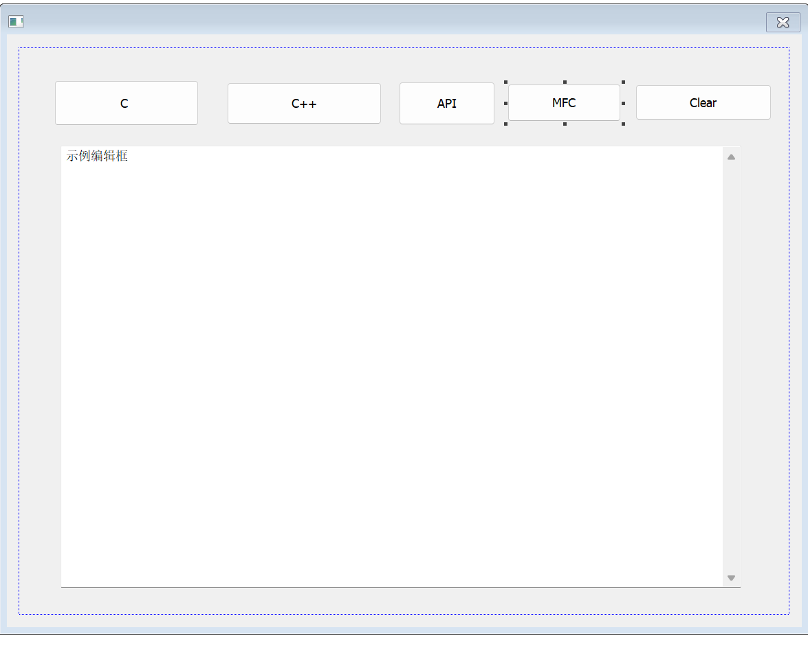
其中，事先准备好一个文本（我这里是随意的一个1.txt）放到工程文件目录下面去了。
clear按钮
介绍一下函数：SetDlgItemText
语法
BOOL SetDlgItemTextW(
[in] HWND hDlg,
[in] int nIDDlgItem,
[in] LPCWSTR lpString
);参数
[in] hDlg类型：HWND
包含控件的对话框的句柄。
[in] nIDDlgItem类型： int
具有要设置的标题或文本的控件。
[in] lpString类型： LPCTSTR
要复制到控件的文本。
返回值
类型： BOOL
如果该函数成功，则返回值为非零值。
如果函数失败，则返回值为零。 要获得更多的错误信息，请调用 GetLastError。
注解
SetDlgItemText 函数将WM_SETTEXT消息发送到指定的控件。
而在MFC中，只需要给定指定的控件编号和文本即可：
void CMFCApplication1Dlg::OnBnClickedButton5()
{
// TODO: 在此添加控件通知处理程序代码
SetDlgItemText(IDC_EDIT1, TEXT(""));
}C 方式
点击第一个按钮，书写响应函数：
void CMFCApplication1Dlg::OnBnClickedButton1()
{
// TODO: 在此添加控件通知处理程序代码
CString s = TEXT("************C*************\r\n"); //一个MFC类
FILE* pF; // 声明文件指针
char line[256]; //准备字符空间
fopen_s(&pF,"1.txt", "r"); // 阅读内容
while (fgets(line, 256, pF) != NULL) {
s += line; // 使用Cstring的函数
s += TEXT("\r\n");
}
fclose(pF);
SetDlgItemText(IDC_EDIT1, s);
}C++ 方式
void CMFCApplication1Dlg::OnBnClickedButton2()
{
// TODO: 在此添加控件通知处理程序代码
CString s = TEXT("************C++*************\r\n");
char line[256];
std::ifstream ifs("1.txt");
while (ifs.getline(line, 256)) {
s += line;
s += TEXT("\r\n");
}
ifs.close();
SetDlgItemText(IDC_EDIT1, s);
}Windows API
void CMFCApplication1Dlg::OnBnClickedButton3()
{
// TODO: 在此添加控件通知处理程序代码
CString c = TEXT("*****************API********************\r\n");
CHAR lpFileDataBuffer[4096];
ZeroMemory(lpFileDataBuffer, 4096);
DWORD dwReadSize;
HANDLE hfile;
hfile = CreateFile(
TEXT("1.txt"),
GENERIC_READ,
FILE_SHARE_READ,
NULL,
OPEN_EXISTING,
FILE_ATTRIBUTE_NORMAL,
NULL
);
ReadFile(hfile, lpFileDataBuffer, 4096, &dwReadSize, NULL);
CloseHandle(hfile);
c += lpFileDataBuffer;
SetDlgItemText(IDC_EDIT1,c);
}Windows MFC
void CMFCApplication1Dlg::OnBnClickedButton4()
{
// TODO: 在此添加控件通知处理程序代码
CString s = TEXT("******************MFC*******************\r\n");
CString line;
CStdioFile file(TEXT("1.txt"),CFile::modeRead);
while (file.ReadString(line))
{
s += line;
s += TEXT("\r\n");
}
SetDlgItemText(IDC_EDIT1, s);
}系统学习Windows API 8
前导
首先，熟悉一下这个形式的main函数：
int main(int argc, char* argv[]){
//...
} 在这里，argc指出了命令行有几个，argv给出了具体的参数是什么，来个demo:
#include<Windows.h>
#include<stdio.h>
int main(int argc, char* argv[]) {
printf("个数：%d\n", argc);
printf("第一个:%s\n", argv[0]);
printf("第二个:%s\n", argv[1]);
printf("第三个:%s\n", argv[2]);
} 现在只是生成工程！随后，使用PowerShell切换到工程的debug目录下面，找到这个自己的可执行文件。由于此时int main(int argc, char* argv[])带上了命令行参数，它可以接受命令！
./mu.exe -d a.txt
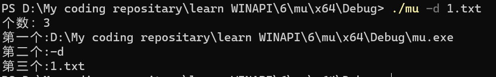
这就是运行的结果。
DeleteFile
删除现有文件。
若要以事务处理操作的形式执行此操作，请使用 DeleteFileTransacted 函数。
语法
BOOL DeleteFile(
[in] LPCTSTR lpFileName
);参数
[in] lpFileName 要删除的文件的名称。
默认情况下，名称限制为MAX_PATH个字符。 若要将此限制扩展到 32，767 个宽字符，请在路径前面添加“\\？\”。 有关详细信息，请参阅命名文件、路径和命名空间。
从 Windows 10 版本 1607 开始，可以选择删除MAX_PATH限制，而无需在前面添加“\\？\”。 有关详细信息，请参阅 命名文件、路径和命名空间 的“最大路径长度限制”部分。
返回值
如果该函数成功，则返回值为非零值。
如果函数失败，则返回值为零 (0) 。 要获得更多的错误信息，请调用 GetLastError。
注解
如果应用程序尝试删除不存在的文件， DeleteFile 函数将失败并 ERROR_FILE_NOT_FOUND。 如果文件是只读文件，则函数将失败并 ERROR_ACCESS_DENIED。
以下列表标识了删除、删除或关闭文件的一些提示：
- 若要删除只读文件，首先必须删除只读属性。
- 若要删除或重命名文件，必须对文件具有删除权限，或者具有父目录中的删除子权限。
- 若要以递归方式删除目录中的文件，请使用 SHFileOperation 函数。
- 若要删除空目录，请使用 RemoveDirectory 函数。
- 若要关闭打开的文件，请使用 CloseHandle 函数。
如果设置了除 delete 和 delete child 以外的所有访问权限的目录，并且访问控制列表 (ACL) 继承了新文件，则可以创建一个文件，但无法将其删除。 但是，你可以创建一个文件，然后获取在创建文件时返回给你的句柄上请求的所有访问权限。
如果在创建文件时请求删除权限，则可以使用该句柄删除或重命名文件，但不能使用任何其他句柄。 有关详细信息，请参阅 文件安全和访问权限。
如果应用程序尝试删除具有打开正常 I/O 的其他句柄的文件或作为内存映射文件的文件 (FILE_SHARE_DELETE必须在打开其他句柄) 时指定，DeleteFile 函数将失败。
DeleteFile 函数在关闭时标记要删除的文件。 因此，在关闭文件的最后一个句柄之前，不会删除文件。 后续调用 CreateFile 以打开文件失败， 并显示ERROR_ACCESS_DENIED。
符号链接行为 —
如果路径指向符号链接，则删除符号链接，而不是目标。 若要删除目标，必须调用 CreateFile 并指定 FILE_FLAG_DELETE_ON_CLOSE。
CopyFile
将现有文件复制到新文件。
CopyFileEx 函数提供两个附加功能。 每次完成复制操作的一部分时，CopyFileEx 都可以调用指定的回调函数，并且可以在复制操作期间取消 CopyFileEx。
若要以事务处理操作的形式执行此操作，请使用 CopyFileTransacted 函数。
语法
BOOL CopyFile(
[in] LPCTSTR lpExistingFileName,
[in] LPCTSTR lpNewFileName,
[in] BOOL bFailIfExists
);参数
[in] lpExistingFileName 现有文件的名称。
默认情况下，名称限制为MAX_PATH个字符。 若要将此限制扩展到 32，767 个宽字符，请在路径前面添加“\？\”。 有关详细信息，请参阅命名文件、路径和命名空间。
提示
从 Windows 10 版本 1607 开始，可以选择删除MAX_PATH限制，而无需在前面添加“\\？\”。 有关详细信息，请参阅 命名文件、路径和命名空间 的“最大路径长度限制”部分。
如果 lpExistingFileName 不存在， 则 CopyFile 将失败， GetLastError 将返回 ERROR_FILE_NOT_FOUND。
[in] lpNewFileName 新文件的名称。
默认情况下，名称限制为MAX_PATH个字符。 若要将此限制扩展到 32，767 个宽字符，请在路径前面添加“\？\”。 有关详细信息，请参阅命名文件、路径和命名空间。
提示
从 Windows 10 版本 1607 开始，可以选择删除MAX_PATH限制，而无需在前面添加“\\？\”。 有关详细信息，请参阅 命名文件、路径和命名空间 的“最大路径长度限制”部分。
[in] bFailIfExists 如果此参数为 TRUE 并且 lpNewFileName 指定的新文件已存在，则函数将失败。 如果此参数为 FALSE 且新文件已存在，则函数将覆盖现有文件并成功。
返回值
如果该函数成功，则返回值为非零值。
如果函数失败，则返回值为零。 要获得更多的错误信息，请调用 GetLastError。
注解
现有文件 (ATTRIBUTE_SECURITY_INFORMATION) 的安全资源属性将复制到新文件。
Windows 7、Windows Server 2008 R2、Windows Server 2008、Windows Vista、Windows Server 2003 和 Windows XP： 在Windows 8和Windows Server 2012之前，现有文件的安全资源属性不会复制到新文件。
现有文件的文件属性将复制到新文件。 例如，如果现有文件具有 FILE_ATTRIBUTE_READONLY 文件属性，则通过调用 CopyFile 创建的副本也将具有 FILE_ATTRIBUTE_READONLY 文件属性。 有关详细信息，请参阅 检索和更改文件属性。
如果目标文件已存在并且设置了FILE_ATTRIBUTE_HIDDEN或FILE_ATTRIBUTE_READONLY属性，则此函数将失败并ERROR_ACCESS_DENIED。
当 CopyFile 用于复制加密的文件时，它会尝试使用源文件加密中使用的密钥来加密目标文件。 如果无法执行此操作，此函数将尝试使用默认密钥加密目标文件。 如果这两种方法都无法完成， 则 CopyFile 将失败并 显示ERROR_ENCRYPTION_FAILED 错误代码。
符号链接行为 - 如果源文件是符号链接，则复制的实际文件是符号链接的目标。
如果目标文件已存在并且是符号链接，则符号链接的目标将被源文件覆盖。
MoveFile
移动现有文件或目录，包括其子级。
若要指定如何移动文件，请使用 MoveFileEx 或 MoveFileWithProgress 函数。
若要以事务处理操作的形式执行此操作，请使用 MoveFileTransacted 函数。
语法
BOOL MoveFile(
[in] LPCTSTR lpExistingFileName,
[in] LPCTSTR lpNewFileName
);参数
[in] lpExistingFileName 本地计算机上文件或目录的当前名称。
默认情况下，名称限制为MAX_PATH个字符。 若要将此限制扩展到 32，767 个宽字符，请在路径前面添加“\\？\”。 有关详细信息，请参阅命名文件、路径和命名空间。
提示
从 Windows 10 版本 1607 开始，可以选择删除MAX_PATH限制，而无需在前面添加“\\？\”。 有关详细信息，请参阅 命名文件、路径和命名空间 的“最大路径长度限制”部分。
[in] lpNewFileName 文件或目录的新名称。 新名称不得已存在。 新文件可能位于不同的文件系统或驱动器上。 新目录必须位于同一驱动器上。
默认情况下，名称限制为MAX_PATH个字符。 若要将此限制扩展到 32，767 个宽字符，请在路径前面添加“\\？\”。 有关详细信息，请参阅命名文件、路径和命名空间。
提示
从 Windows 10 版本 1607 开始，可以选择删除MAX_PATH限制，而无需在前面添加“\\？\”。 有关详细信息，请参阅 命名文件、路径和命名空间 的“最大路径长度限制”部分。
返回值
如果该函数成功，则返回值为非零值。
如果函数失败，则返回值为零。 要获得更多的错误信息，请调用 GetLastError。
注解
MoveFile 函数将移动 (重命名) 文件或目录 (包括其子级) 在同一目录中或跨目录。 需要注意的是，当目标位于其他卷上时，移动目录时 ，MoveFile 函数将失败。
如果文件跨卷移动， MoveFile 不会随文件一起移动安全描述符。 将为文件分配目标目录中的默认安全描述符。
MoveFile 函数将其操作与链接跟踪服务协调，因此可以在移动链接源时对其进行跟踪。